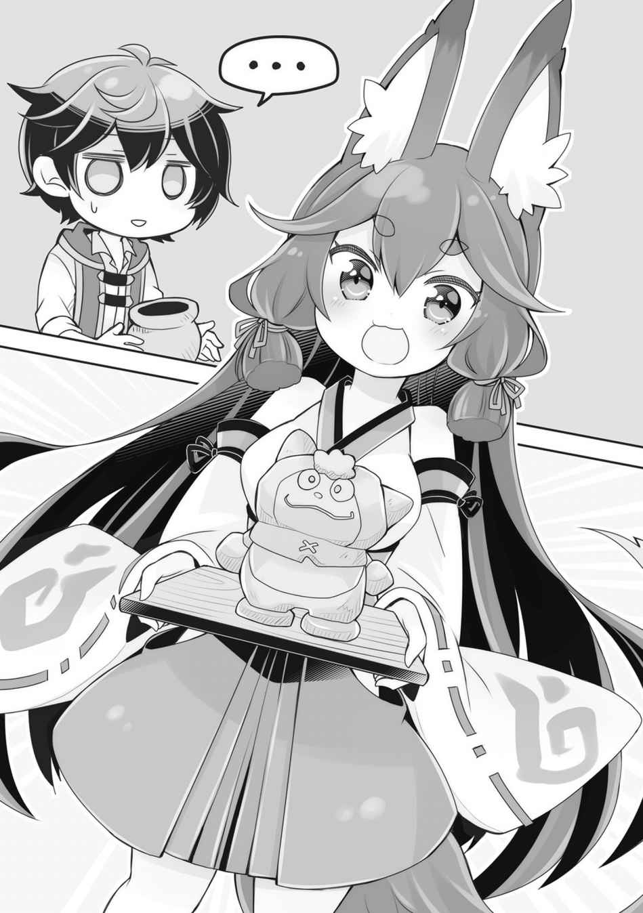

第一章
サラたちが島にやってきたのは、夏の終わりの頃だった。
ほとんど行きがかりで連れてきたような形だったが、概ね問題なく島での生活にも順応してくれて安心したものだ。故郷であるモンディアルは田舎国だったから問題ないというユーリの話は本当だったらしい。
カエデはともかく、レンの事は受け入れてもらえるのか不安だったが、レン自身が屈託のない性格なのが幸いしたのか、結構仲良くやっているようだ。
戦士君のことも最初は距離を測りかねていたようだが、いっしょに仕事をしたりしているうちに、自然と受け入れられていった。戦士君の出自については、もう俺の祝福の能力だと告白済みだ。もちろんアラミラの名は出さないのだが、いずれにせよなんらかの能力によるものだとさえわかっていてもらえればいい。
だが、レンの出自については、とりあえずボカしてある。
謎生物である戦士君を生み出す能力と、レンのような「人間」を生み出す能力とでは、似ているようで隔絶したものがあるように感じたからだ。いずれは告白する時が来るだろうが、焦ってなにもかもをぶっちゃける必要もないだろう。
大事なのは無害な存在だと認知されること。あとは、時間を使ってお互いのことを知っていけばいい。出自そのものはたいして重要ではない。
まあ、最初はさすがにキツネ人間のレンに、みんなギョッとした様子だったが……。
戦士君に関しては、あの可愛らしい外見と、力持ちで仕事を手伝ってくれる優しさとで、女性ばかりの近衛隊に案外早く受け入れられた。
「とりあえず、滑り出しは好調……だけど、問題はこれからだな」
簡易的な住居も完成し、少し落ち着いてきた頃。
ユーリとサラからの突然の嫁宣言＆同居宣言もなんとかはぐらかし（そもそも俺が暮らしていた小屋はアビスとカエデとレンですでに満員状態だ）、新しい村人となった元近衛隊の面々とコミュニケーションを取り、最低限の情報は得られた。
そろそろ、これからの方針について考えなければならない。
俺は、島の住民全員を集めて会議を執り行うことにした。第一回島民会議である。
彼らは俺の『てのひら開拓村』のことを、すでに大まかには理解している。村から資材や食料を取り出せるということも。
それも踏まえた上で、これからどうするべきかを考えるのだ。
「えー、それでは第一回島民会議を開催いたします。司会進行は私、カイ・ハスクバーナが担当いたします」
わー、パチパチパチと、まばらな拍手が起こる。そもそも、総人口はたったの十四名。村と呼ぶのすらおこがましい規模だが──
「えー、一応この島に国を作る……ということになりましたので、みなさんのお知恵を拝借できたらなと考えています」
国なのである。
いや、本当にまだ十四人と戦士君たちだけしかおらず、それこそ学級レベルの人数なのだが、国を作ると決めたのだ。まあ、あくまで最終的な目標……という以上の意味は、現段階ではないのだけど。
さて、こうして意見を求めてみると出るわ出るわ。足りないものだらけだ。
「服がない」「靴がない」「農機具が足りない」「油が欲しい」「釣り具はないか」「生活用具が足りない」「トイレを作りたい」「お風呂に入りたい」「いろんなお肉が食べたい」
などなど。考えるまでもなく、こうなるのは当然なのだ。島にはまだ店の一つすらなく、どこかの街と繫がっているわけでもない、正真正銘の孤島なのだから。
俺の開拓村のことを抜きにすれば、まだまだ無人島サバイバルと同等の生活レベルでしかないのである。
「カイ様。いま、この島に必要なものはハッキリしていますわ」
思い思いに意見を出す元近衛隊員たちを黙らせ、ユーリが余裕たっぷりに口を開いた。
「国に必要とされる三要素は、国民、領地、そして支配力。今、この島に足りないのは……ハッキリしています、ね？ カイ様？」
「うん……。うん？」
まず、その三要素のことを知らなかったが、そうだな……。領地に関しては問題ないだろう。決して広くはないが、この島が領地ということになる。この世界に領海という概念があるかどうかは知らないが、海の分も入れれば結構領地は広いかもしれない。
次に支配力。支配力とはつまり戦力のことだろうか。厳密には国が持つ戦力？ 国有軍のことを指す……のだろう。
まあ、これに関しては意外といい線いってるはず。なにせ、魔法使いが三人もいるのだ。この世界では魔法使いの数が戦力を測る基準になるほど、魔法使いが突出した力を持っている。ただし、一人は魔法を封じられているので、厳密には今は魔法使いは二人。だとしても、国の規模を考えれば悪くない。
となれば、やはり答えは一つ。
「国民だな」
「さすがカイさまですわ。正解です」
正解か、よかった。
しかしユーリはなかなか物知りだ。さすがは元は一国の王女。教育の質が違う。
「だけど、国民はそうそう簡単には増やせられないぞ。他所から人を連れてくるってのは、そう簡単なことじゃないし」
ユーリたちを連れて来られたのは、あくまで偶然が重なった結果というやつだ。
「いえ、もっと常識的な方法があるではありませんか。普遍的なやり方が」
「え、そんなのあるの？」
常識的な方法ってなんだろう。戦士君をもっと積極的に増やすとか？ いや、それは常識的な方法じゃない。むしろ非常識な方法だ。
「降参。なにかいい方法あるなら教えてくれ」
「カイ様が頑張ればよろしいことかと」
「頑張る？ なにを？」
「……世継ぎ」
ボソッとユーリがそう言うと、会議に参加していた元近衛隊員たちに、謎の緊張感が漂う。ユーリが、島暮らしの中でさえ陰ることのない美しい顔を上げ、一気にまくし立てた。
「カイ様は、私とサラが一緒に住むと言っているのに、な・ぜ・か！ 避けているようですが！ 一国の王を目指すのであれば、世継ぎは最重要事項ですし！ そうでなくても国民を増やすという意味でも！ 必要なことなのではないですか!?」
「え、えええ？ そういう話？」
突然ヒートアップするユーリに驚いてしまう。
確かに、なんとなく避けているのは否めないけれど……。
「まあ、そうね、うん……。ユーリセシルさんの言い分もわかるけど」
「ユーリです！」
「ユーリセシルさん」
「ユーちゃん」
「……じゃあユーリで」
「はい、カイ様♡」
……正直、ユーリが何を考えているのかよくわからないのだ。サラの「嫁になる」という言葉のほうが、まだ素直に聞き入れられるくらいである。
ユーリは……なんというか、義務感というか、元王族だからというか、彼女個人が出した結論という感じが全然しないのだ。
『ユーリ』と呼ばれて、全国民の前なのに、ただの少女のように恥ずかしそうに微笑むユーリは、確かにこんなサバイバルな状況にあっても輝くような美人だし、そりゃあ嫁宣言も嬉しいに決まっているのだけど。
「……ま、国民のことはおいおい考えるとして、まずは生活の安定からですね」
俺は話を変えた。国民云々は、長い目でみれば必要だろうけど、現状のサバイバル状態で考えることではない。まだ彼らには「島での初冬越え」というハードなイベントをクリアーしてもらわなければならないのだ。この島の冬は本当に寒い。
「さっき出して貰った不満点は、すぐに解決できるものは開拓村から道具を出してなんとかしていきます。僕としても不便がないようにしていこうと思っているので、遠慮せずにどうぞ」
さしあたって、まだまだこの島では「生きる」ことが重要な課題のままだ。
俺は初年度を開拓村の能力のおかげでなんとか乗り切ったわけだが、人口が増えれば手が届かない部分も出てくるだろう。いくら祝福による能力があったところで、自分一人でカバーできる範囲など、たかが知れている。
もうじき秋になる。そうしたら冬の到来は、あっという間だろう。この島の冬は、雪こそ降らないものの、かなり冷える。準備を怠れば死人が出てもおかしくはない。
サラたちがやってきて、今、島の人口は十四名。戦士君を入れればもっと多いが、とにかく十四名だ。
今までが、俺とアビスとカエデとレンの四人暮らしだったことを考えると、一気に三倍以上。もちろん、準備をしてあるわけでもないので、なにもかもこれからだ。
衣食住の「食」、食べるものは、さしあたり俺が開拓村から出したもので賄える。
村にも小規模な畑があるが、その生産量は全員分を賄うには程遠い。
開拓村での収穫と違い出来にもムラがあるし、量も少ないので当てにはできそうもない。よって、開拓村が使える俺が倒れたら全滅ということになる。
俺という個人頼りになってしまう状況は、あまり健全ではないが、今年の冬の間に根本的な解決はできないだろう。
衣食住の「衣」、着るものは、ほとんどみんな来た時に着ていた簡単な作りの奴隷服を着用しており、これもとりあえず開拓村から簡単な服を取り出して着てもらうより他にない。開拓村から出せる服は、簡素なものが多く、素材も革か麻くらいのもの。今回の旅で羊を手に入れたので、毛糸が手に入るようになれば越冬がかなり楽になるのだが……。
さて、最後の一つは住──つまり家だ。
「とりあえず、それぞれ簡単な小屋は作りましたし、当座は凌げる状況ですが、冬を越す為にはもっとしっかりした家を建てる必要があります。建築の知識がある人は？」
俺の質問に、元近衛隊のメンバーの一人が手を挙げた。
「元大工か何かなんですか？」
「私ではなく、実家がですが、最低限の知識はあります」
「おおっ！」
本職でなかったとしても嬉しい。少なくとも闇雲に作らなくて済む。
「では、冬までに僕といっしょにしっかりした住居を作るのを手伝って下さい」
「は、はいっ！ よろしくお願いします！」
実家が大工の元近衛隊員さんは、サラより少し年下と思われる女性で、ソバカスがチャーミングだ。家造りはかなり労力がいる作業だが、その部分は戦士君がいればなんとかなるだろう。彼らは力持ちで身軽。助手としても役に立ってくれるに違いない。
「待って下さいカイ様。屋敷を作るということですが、どういう屋敷を建てるつもりなのですか？」
話が決まりかけたところでユーリに口を挟まれた。
「どうって……。冬が越せるように隙間風が入り込んでこない、暖炉がある家かな」
越冬に必要なのは、とにかく保温だ。暖炉を作るのは大変だろうが、やってやれないことはないはず。とにかく冬に凍えて眠るのは勘弁してもらいたいのだ。カエデなんかは死んでしまってもおかしくない。
「何棟建てるつもりなのですか？」
「数？ そうだなぁ……どうしよう、十棟くらい？」
理想を言えば、一人につき一棟ということになるのだろうか。国民のほとんどが繫がりを持っていない。プライバシーの問題もあるが、仲の良い者同士でシェアするという手もある。さすがにカエデに一軒与えても仕方がないし、アビスやレンは俺と住みたがるだろう。ならば、俺とカエデとアビスとレンで一棟としても──
「カイ様。そんなにたくさん建てる必要はありませんわよ」
「えっ？」
「王の居城を一つ。それで事足りますわ」
「壮大なこと言い出した！」
城って。
ついさっき、衣食住をなんとか揃えてサバイバルしていこう的な話をしていたばかりなのに。やっぱりユーリはお姫様だから感覚ズレてんのかな。
「だって、アビスさんもレンさんも魔法使いなのでしょう？ 魔法使いと近衛隊が城に詰めているのは普通のことですわ。私たちは国民であり、国王軍。いっしょに暮らせばいいと思いません？」
「そうなの？」
確かに大きな建物を一つだけ作ったほうが、面倒がなくていいのか？
「でも、近衛隊のみんなだって、個人で家が欲しいのでは？」
「近衛隊たちはもともと城の二人部屋で生活していましたし、問題ありません。私たちは奴隷にされるところだったのですよ？ 温情も結構ですが、王として的確に判断して下さいませ」
「的確に……」
たくさん家を建てるってのは的外れだったのか……。
いや、そうだよな。一人一軒の家を持ってたって持て余すし、普通に寂しいかもしれないんだよな。こんな総勢十四名の孤島で、一人一人が別々に暮らすというのが、変な発想だったかもしれない。
「ですから、全員で暮らすことのできる立派な城を一つだけ。そこからこの国を始めていきましょう。立派な帰る家がある。そのことが、こういう場所での生活に勇気を与えてくれるということもあるでしょうから」
「そうだな。ユーリの言う通りだ」
ユーリたちは、故郷であるモンディアル公国を滅ぼされ、もう帰る場所がない。
そんなユーリが言うのだから、説得力がある。
俺としても、立派な城があれば、この島を国にするという夢みたいな目標に現実感が湧いてくるかもしれない。
実際問題、家さえ立派なものがあれば、それ以外は開拓村に１００％頼ってしまえばなんとか生きることができる。
最優先でやっていくことにしよう。
◇◆◆◆◇
「てのひら開拓村！」
次の日。俺は城を建築する為の資材を出すため、開拓村の能力を発動させた。
瞬時に視界がまったく別の場所へ切り替わる。
開拓村もすでにレベル20。
祝福を授かった時は、本当にただの荒野状態でどうしたものかと思ったものだが、それも今は昔の話。今では田舎の村程度にまで発展している。
村の入り口にある看板の表記はこういう感じだ。
──────────────────────
☆☆☆ 手のひらの開拓村 ☆☆☆
おめでとうございます！
開拓村が『魔法の隠れ里』になりました！
『村の出口（東）』の機能が解放されます！
『種合成』の機能が解放されます！
新しいアドバイザーエルフが追加されます！
現在のレベルは 20 です。
村には名前がありません。
開拓度は『魔法の隠れ里』です。
ＮＥＸＴ ＬＥＶＥＬ ： 魔導師の誕生
──────────────────────
この間の旅で手に入れた物資により、村は一気に成長した。
開拓度が『魔法の隠れ里』になったのは斜め上だったが、悪くない。
なぜ突然『魔法』などという要素が登場したのか気になったが、エネルによると『外敵』として村でボコボコにした奴隷商館の傭兵団長が村で「攻撃魔法」を使った結果、村が「魔法」という概念を獲得したのだ……ということらしい。
とはいえ、まだ村に魔法そのものは誕生していない。次のレベル条件が『魔導師の誕生』となっているくらいだ。
村の様子にそう大きな変化はないのだが、ついこないだ入荷したばかりの小麦の栽培がもう始まっていた。主食になるような穀類に村人が飢えていたのかもしれない。
能力についても、事実上のワープポイントである『村の出口』に新しく「東側出口」が加わった。今までは「北」だけだったのだが、二箇所に増えるということは、かなりいろいろな使用方法が考えられるだろう。
さらに『種合成』というのも増えていた。種とは、村が成長するとエネルから貰える「創造の種」のことで間違いない。創造の種からは戦士君が生えてくるのだから、合成することによりスーパー戦士君的なものが生えるようになるのだろうか。いずれ試してみたい。
「やあ、カイ。今日はどうしたの？」
開拓村に住むエルフのエネルが、手に持った三本もの串焼きを食べながら近づいてくる。
「ああ、エネル。なんか城──は大げさだけど、大きめの屋敷を建てることになってね。木材とか石材とか貰いに来た」
「城!? こないだまで、小屋を作るとか言っていたのに、突然レベルアップしたもんだね」
「人も増えたからね。少しずつでも発展させていかないと」
衣食住足りて礼節を知るなんて言葉もある。今までは少人数だったし、俺とカエデ以外は人間ですらなかったから、あまり関係なかった。だが、今はそこから十名も増えている。
生きるのだけでギリギリな生活を続けていれば、いずれ人心が荒み破綻するときが来る。
そうならないように。人間らしい生活ができるように。
一足飛びでも二足飛びでも、島を発展させていくべきだろう。
「カイさーん！ ご注文はないですか！ ご注文！」
串焼きを頰張っているエネルの後ろから、エネルよりも少しだけ背の高いエルフの少女がぴょんと顔を出した。
「コロモか。ごめん。今日はまだない。近いうちにまた頼むよ」
「むー、私の腕を疑ってます？ 食べてばかりのお姉ちゃんと違ってできる女なんですよ、私は！」
「むが!? むがむがもごもが！」
「エネルも口に物詰めながら喋らない」
この、エネルにやたら絡んでいるのは、エネルの妹で名前をコロモという。
彼女がやってきたのは、村のレベルが20に上がった時だった。
──
────
────────
「おめでとうカイ！ ついについにレベルが20にまで上がったよ！ さすがにあれだけの品物を納めたからね。一気にいったね！」
サラたちが村にやってきた次の日のこと。
街で手に入れた物資を開拓村に入れたとはいえ、ここまで上がるとは想像もしていなかった。元のレベルが12だったのだから、８レベルも上がったということだ。
孤島での生活だけでは、開拓村のレベルは伸び悩んでいたのだ。
思い切って外に出たのが功を奏したと言えるだろう。
「とすると、なにかご褒美があるのか!?」
開拓村のレベルは５刻みで、少し大きめの発展がある。レベル15と20の分。二つも大きなご褒美があるはずなのだ。
「うん……それなんだけどね……」
「私です！ 私がついに来ました！」
なにか言い淀むような仕草を見せるエネルの後ろから、エネルよりも少しだけ背の高いエルフがヒョイっと姿をあらわした。少し個性的な服装をした艶やかな少女だ。
「え、だれ？」
「はじめましてカイさん！ 私はエネルお姉ちゃんの妹のコロモ！ 衣食住の『衣』を司るサポートエルフです」
「衣」
衣だからコロモか。普段気にしていなかったけど、エネルは食ってことか……食べる専門のような気もするけど、毒味役として活躍してくれてるからいいのかな。レベルがもっと上がれば、いずれ「住」専門のエルフも来るってことか？
ていうか、エネルに妹がいたのか。
「食べるしか能が無いお姉ちゃんと違って、私は一芸があります。なんと着るものが作れるんです。クリエイティブぅ！」
「おお！」
すごい！ 嬉しい！
服に関しては開拓村の村人が着ているレベルのものなら調達可能だったが、それ以上の物は無理だったので、ちょっと……いや、かなり原始人感があったのだ。
俺とカエデだけの問題ではなく、サラたちだって着の身着のままこの島に来た。だから、服をどうするかはけっこう真剣に悩んでいたのだ。着る物の心配がなくなれば、この島での生活の難易度はかなり下がるだろう。
素材にしても、時間が経てば羊毛も手に入るようになる予定だ。綿も仕入れた。麻ならいくらでもある。水牛の革もある。これは期待ができそうだ。
「ちょ、ちょっと！ なにさらっと私をディスってるの!? 一見食べてばかりいる私には、美食の探求やら栄養価のチェックやら毒味やらの、人間生活には欠かすことのできない重要な役目があるんだよ？？？」
腕をわたわたと振りながら大食いの弁明をするエネル。
「ただの食いしん坊なのかと……」
「ひどい！ カイはわかってくれてると思っていたのに！」
いやまあ、薄々わかっていたよ。
こんな無人島生活でお腹を壊さずに生きていけてるのは、エネルのおかげだって。
普通はどっかで食中毒になったり、毒で幻覚見たり高熱出したりしてもおかしくない。まあ風邪は一度ひいたけども。
「とーにーかーく！ 注文を言い付けてくれれば、私がある素材でちゃちゃっと作っちゃうんで、なんでも注文して下さいね。たくさんは作れないですけど三日に一着くらいのペースなら余裕ですから！」
「三日って開拓村基準で？」
「いえ、すみません。カイさんの世界基準です。布を作るところからスタートするので、どうしても時間はかかっちゃいます！」
「布からとは、本格派だな……」
しかし三日で一着か。フル稼働したとしても三〇日で十着程度ということになる。
コロモに仕事頼むのは計画的にやっていったほうがよさそうだ。
「さっそく、なにか作りますか？」
「あー、そうだな。……靴は作れる？」
「靴ですか？ もちろん作れますよ」
「靴でも三日でできる？ 革をなめすのも大丈夫なのか？」
「もちろんです！ 素材のほうも処理からやりますから、完璧ですよ」
「マジで優秀だわ、コロモ」
革のなめしは、現状では「なんとかなめせた」というレベルでしかなかったのだ。
「じゃあ、とりあえず、人数分の靴を作ってくれないかな。ブーツのほうがいい。なるべく丈夫なやつで」
「ワークブーツですね。素材的にはなんとかなりそうですから、問題はサイズですね」
「ああ、全員連れてくるよ。採寸してやって」
「かしこまりましたー！」
あれよあれよと話が進み、全員分の靴を作ってもらうことが決まった。
なぜ靴かといえば、サラたちはみんなサンダル履きで、どう考えてもサバイバルには不向きだったからだ。服はまだ夏の終わりでなんとかなるが、靴ばかりはそうもいかない。なにをするにせよ足下は大事だ。
その後、一人一人を開拓村で採寸してもらい、コロモによる靴の制作はスタートした。
そして、三日後。
「カイさーん！ できましたよ、靴が！」
俺が開拓村に入ると、コロモがすぐに走ってきた。
手には完成したばかりの靴を持っている。
「どーですか、これ！ なにせウォーターバッファローの革ですからね、ツヤが違いますよ。今回はシンプルに黒にしましたが、他の色で染めることもできますよ。やっぱりオシャレは足下からですよね！」
コロモがドヤ顔で差し出してきたブーツは、くるぶしが隠れるくらいの丈があり、編み上げ式でかなりの完成度を誇るものだった。
これだけの品は、前世でも相当な値段で取引されるだろう。
「超かっこいい……。今ある素材で、こんなの作れるのか……？ マジで？」
「作れます作れます！ 使ってるの革と木と骨と麻紐だけですよ！ でも、よく見て下さい、けっこう細かい部分で手が込んでるんですよ、これ。トゥキャップとアイレットは本来金属を使う場合が多いんですが、なかったので牛骨で造形してみましたし、鋲もモンスターの爪の硬い部分から作りましたし！ ソールはゴムがなかったので、伝統的なレザーソールで、耐久度を重視し思い切ってトリプルレザーに──」
「ストップストップ、コロモがすごく頑張ってくれたのはわかったよ」
「わかってくれますか！」
好きなことになると、しゃべりが止まらないタイプだな、コロモは。
「とにかく履いてみるよ」
コロモが固唾を吞んで見守るなか、俺はブーツに足を入れ、しっかりと紐で縛り上げた。
「おお……」
すごい。足に吸い付くかのようなフィット感だ。
軽くジャンプしたり、走ってみたが、足が痛くなったりすることもなく違和感ゼロ。
「ど……どうですか……？」
「いいよ！ 最高じゃん！ これなら、靴に関してはもう考えなくていいってくらい！」
「やったー！ ま、まあ自信はありましたけどね！」
腰に手を当てて、胸を張るコロモ。これだけの技術だ、どれだけ誇ってもらってもいい。
「ではでは、次の人の分も早速制作していきますね！」
「ああ、頼む。ありがとう！」
「えっへへー。お姉ちゃんよりお役立ちでしょ？」
「いちいち私を引き合いに出すな！」
少し離れた場所で、俺たちのやりとりを見ていたエネルがツッコミを入れると、コロモは、笑いながら家へと引っ込んでいった。
「カイ、にやけてる！」
俺もツッコミを喰らう。
新しいブーツの嬉しさについにやけてしまっていたようだ。
ブーツでこの出来ならば、服のほうもかなり期待できるだろう。
国民みんなのブーツ作製が終わったら、次に作って貰うものも考えておかなければな。
◇◆◆◆◇
「カイ君！ みんなから、井戸か水路が欲しいという提案が出ているのだが、どうしよう？ 地面を掘っていけば水が出てくるものなのか？」
城造りがスタートし、元近衛隊員たちは、それぞれが畑作りなどをスタートさせたころ、サラが代表して陳情に来た。
いや、陳情は大げさか。単純にサラが一番俺と親しいからかも。
しかし、井戸か。いつかは必要になると思っていたが、作るのは難しいだろうと後回しにしていたものだ。開拓村から綺麗な水は取り出せるが、これから畑を増やしたり、島民が増えていくことを考えれば、当然水の確保の優先度は高くなってくる。
「井戸作りですが……闇雲に掘っても水が出るかどうかは運次第です。浅い場所に水源がある場合もあるし、かなり深く掘らないと出ない場合もあります」
前世で、井戸についてのテレビ番組は時々見た。井戸掘りそのものも、ボーリングの機械がないこの島では、すべて人力での作業になり相当な労力だろう。戦士君がいるとはいえ、限度はある。せめて、水源の場所がわかっているならともかく、闇雲に掘るのは勘弁してほしいところだ。
サラは俺がイマイチ乗り気でないことを察したのか、別の要望を出してきた。
「では、井戸でなくてもいいんだ。水をたくさん貯めておける場所かなにかでも」
申し訳なさそうに言うサラ。確かに現状では農業用水に事欠くし不便だ。
「それか、大きめの水瓶みたいなものでもあれば……」
「水瓶……ああ！ そういえば！」
水瓶！ 陶器か！
木桶があるから、あまり気にしていなかったけど、水瓶があれば水を貯めておける。
水瓶──つまり陶器くらいならば技術的にも製作可能なはずだ。
「作れる作れる！ なんで思いつかなかったんだろ、ありがとうサラ！」
嬉しくてサラの両手を握って振り回してしまった。
頰を赤らめて狼狽するサラのことも気にならないほど、気分が高揚していた。
陶器の製作が村で始められれば、村が成長し技術力が上がることで、完成度や芸術性も高まってくるに違いない。今までは農作物が産業のメインだったが、工芸品を作れる村にクラスアップすることも可能だろう。これは決まりだ。
まずは、素材となる粘土を探しに行かないとな！
というわけで、粘土を探しに出ることにした日の朝。
陶器の作り方そのものはそう難しいものじゃない。粘土をこねて形を作ったら焼いて固める。つまりはそういうことだ。厳密にはもっと奥の深いものだろうが、細かい部分は、実際に始めてみなければわからない。俺の前世の知識はあくまでもテレビで見た薄ボンヤリした記憶に基づくものであり、正確ではないのだ。
「とはいえ、知識のある人がいてくれてよかったよ」
「いえ、私は実家が商家だっただけで詳しく知っているわけではないので！ 何度か父に付いて窯元に見学に行ったことあるだけですし！」
手を顔の前でブンブンと振って謙遜するこの子はリアといい、実家が商家だったらしい。知識のある者を募集したら彼女が手を上げてくれたのだ。
「いや、釉薬の作り方を知ってる人がいると思わなかったから、本当に助かる。とりあえず縄文土器からスタートしなくて済む」
「じょうもん……？」
「ああ、いや、こっちの話」
釉薬というのは陶器を作る際に、素焼きした器の表面につける液体のことだ。
この釉薬が高温で焼かれガラス質に固まることで、前世でもよく使っていたツヤのある陶器ができる。
使う材料を変えれば陶器ではなく磁器も作れるのかもしれないが、そっちの知識はさっぱりだ。まあ、そのあたりはおいおいだな。
「とにかく粘土だな。どっかにあったっけかな……。アビス覚えある？」
「……マスタ、私そういうの全然見てなくて、わかんない」
申し訳なさそうに言うアビス。まあ、粘土がどこにあるかなんて、わからなくて当然だ。そうそう露出してるものでもないだろうし。確か、田んぼの土なんかでも作れたはずだから、沼っぽい場所を探せばいいのかな。
「あっ、あの。私聞いたことあります！ 粘土は川の泥が集まる場所に堆積していくんだそうです！ あと良い粘土がある場所は、大きな木が育たないって聞きました！」
リアが手を挙げる。かなり有益な情報だ。そもそも粘土がなにかすら正確な知識を持っていない俺にとっては、こういう現地の知識がありがたい。
「泥の堆積する場所か。とりあえず、川を上流から下って探してみますか」
「……がんばろー」
「オサオサ！」
メンバーは、俺とアビスと戦士君たちだ。
まだ島にはモンスターが出る可能性がある為、リアには探索のほうは遠慮してもらった。
島の移住区となっている巨大樹周辺は少し小高い丘の上であり、粘土がありそうな大きな川は近くにない。島はただの平地だけで構成されているわけではなく、山あり谷あり、起伏に富んだ地形だ。大きめの川の上流まで、走っても二時間程度かかるだろうか。
川の上流から、川沿いに粘土を探しながら下ってくる。
アビスと戦士君もいっしょに探してくれたが、それらしいものは見つからなかった。
「っていうかさ、戦士君、粘土ってどういうものかわかる？」
近くにいた赤い頭巾の戦士君に質問してみる。
「オサ！ オッサオサオサ！」
「うん」
わからん。通訳のレンを連れてこなかったのは失敗だった。
「こう……土なんだけどネトネトしてて灰色の……土？」
下手か。粘土の定義なんてわかるか！ 粘度の高い土としか言い様がない。
「わかりそう？」
「オサ！」
元気に手を挙げて返事をしてくれる、戦士君。
わかったんだ……。なら信用するしかないか。
「じゃあ、他の戦士君にも伝えてきてくれるか」
「オッサー！」
戦士君がトテトテトテーと仲間たちのところに走って行く。彼らの言葉はわからないが、少なくとも俺の言葉は理解しているらしいので、問題ないだろう。多分。
「じゃあ、俺たちも探すか」
「……うん」
アビスと二人で川縁を中心に粘土を探す。それらしき土はけっこう見つかるのだが、粘土というには粘度が足りないものばかりだ。なかなか難しい。
そうしている間にも、戦士君たちは川の中にジャブジャブ入って、川底の土まで調べてくれているようだ。川の流れが淀む場所にあるという前情報があったからだろう。
丹念に探してくれている戦士君たちのペースに合わせて、ゆっくり川沿いを下っていく。
「だいぶ下流まで来たな。この川はダメか？」
正直、島にそう多くの川が流れているわけじゃない。
それなりに広い島ではあるが、川はさすがに数本程度だ。大きな川は、ここしかない。
「川がダメだったら、今度は崖肌が露出してる場所を探してみるか」
「……崖にねんどがあるの？」
「そういう話を聞いたことがあるってくらいだけどな」
前世での聞きかじりで、確実性のある情報ではない。だが、そういうものに賭けるしかないのも、また実情。
そんな話をしながら粘土探しを続けていると、川に潜っていた水色頭巾の戦士君が、バッシャーとすごい勢いで飛び出してきた。
「オッササー!!」
穫ったどー！のイントネーションで雄叫びを上げる。
その手には、確かに粘土らしき灰色の土が！
「見つけたのか！」
「オッサー！ オサオサオサ！」
他の戦士君たちも次々に粘土を抱えて、水の中から飛び出してくる。
「ちょっ、ちょまって。粘土はとりあえずここに置いて」
「オサ！」
ドサドサと灰色の土が置かれる。底に大量に堆積していたのか、量も十分だ。
手に取って見ると、なるほど子どもの頃に遊んだ覚えがある「ねんど」そのものだ。
「……これがねんど？ マスタが探してたの」
「そうだよ。これならネトネトしてるから形を作りやすいだろ？ 形を作ったら焼いてやると器になるんだよ」
「……マスタ、すごい物知りだね」
物知りか。すべての知識が中途半端すぎて、生前もっと勉強しておけばよかったと後悔することのほうが多いけどな！
「とりあえず持って帰れるだけ掘ったら一度戻ろう。粘土の一部は開拓村に新素材として入れておくよ」
というわけで、無事に粘土は発見できた。
一度みんなのところに戻り、次の日。ここからが本番である。
陶器は焼かなければ完成しない。ということは窯が必要なのだ。当たり前だけど。
「どこに作るか～って決まってるな。おーい、レン！ 戦士君たちも集合！」
カエデと遊んでいたレンと戦士君たちを招集。窯造りに人手は欠かせない。
窯を作る場所は、島か村かの二択だが、長い目で見れば開拓村で技術を確立してもらったほうが早い。あっちは最初のきっかけさえあれば、あとは勝手に発展していくのだから。
「どうしたんです、マイロード。いっしょに遊びますか？ カエデのトモダチが想像以上に身体能力高くて面白いですよ」
どうやらカエデが「仮初の命」を与えた人形の性能検査をして遊んでいたらしい。ものすごく興味があるが、とりあえず窯作りが先だ。
「いや、これから村で陶器を作るための大きい窯を作るから、レンも手伝ってくれ。お前じゃなきゃできないことなんだ」
「わたくしちゃんじゃなきゃできないこと!?」
窯作りそのものはレンじゃなくていいのだが、そこから先の工程にレンは欠かせない。
「なになに、お兄ちゃんなにかやるの？ 見てて良い？」
「興味あるのか？ もちろんいいぞ」
カエデも見てみたいということでいっしょに開拓村に移動した。
「うぁー、お兄ちゃんの村、少し見ない間に立派になったね」
そういえばカエデが村に入るのは、レベルが20に上がってからは初めてだったか。
「まだまだこんなもんじゃないよ。これから大都市にする予定なんだからな」
開拓村の成長が、俺の人生の豊かさや安全度に直結するのは、もう間違いがない。俺の人生は、この能力頼りだ。そして、今では島のみんなの生活もまとめて開拓村で面倒見ているようなもの。こんな村レベルで満足していられない。
「……カエデが暮らしてた街は、けっこう大きかったんだっけ？」
ほえーっと村の様子を眺めていたカエデに話しかける。
カエデの故郷は、まだどこにあるのかわかっていない。『ゴディエ』という名の街で暮らしていたらしいが、国名は不明。十二歳にもなって自国の名前も知らないとは──とも思ったが、この世界ではそういうものかも。俺には前世の知識があったから世界を広く見られるのであって、普通は自分の生活圏のことしか考えないものなのだろうから。
「うん。石畳の道を真っ直ぐすすんでいくとお城があるの。パパがお城に勤めてたから、ママと迎えに行ったりしてたんだ」
「石畳とお城か。それじゃあかなりの大都市だな。俺の故郷にはお城なんかなかったし、石畳は大通りだけだったよ」
正直、カエデの故郷はすぐに見つかると思っていた。なにせ城がある規模の街だ。だが今のところ情報はない。世界は俺が思っているよりも広く、同様に神殿の勢力範囲も広い。
「カエデの故郷も、かならず見つけてやるからな。すぐ……というわけにはいかないけど」
「うん……お兄ちゃんも大変だけど……お願いします。パパもママも私がいなくなって泣いてると思うから」
「優しい両親だったんだな」
「私、一人っ子だったから」
なるほど、可愛い一人娘が突然攫われていなくなったら、両親のショックは計り知れないだろう。当人であるカエデが言うくらいだ、よほど仲の良い親子だったに違いないのだ。神殿はどんな言い訳を用意して親を納得させるのか。
素直に「邪神」の祝福を受けたから捨てたと言っているのか、それとも珍しい祝福だから神殿の内部に匿うとかなんとか言って誤魔化しているのか。
いつか、俺の親でも、カエデの親でも再会できたら訊いてみたいものだ。
「コホン！ そろそろいいかい？ 今日はみんなで何の用事？」
話が終わるタイミングを待っていたのか、エネルが咳払いして訊ねる。
「ああ、悪い。ちょっと村に大きめの窯を作るからさ。エネルとコロモも手伝ってくれ。村人たちにも作陶を教えたいし」
「陶器！ そっか、村ではバナナの葉っぱがメイン食器だったからね。でも、カイは陶器の知識なんて持ってたのかい？」
「いや、ぜんぜん。テレビで見た程度だよ」
まあ、それでも最低限の理屈はわかる。あとは、トライアンドエラーだ。
エネルとコロモを従え、場所を決めて窯を作る。
窯は、登り窯というスタイルで、斜面に作り火が下から上に登っていくのを利用した窯だ。村の中で少し土が盛り上がっている部分に作ることを決めた。
少し高さが足りないので、戦士君たちを総動員して土を盛り高さを稼ぐ。
窯を作る素材は本当はレンガがいい。だが、開拓村にはまだ日干しレンガしかない。木材は当然ダメ。
「とりあえず、日干しレンガで作るだけ作ってみよう。隙間には粘土を詰めて。倒壊しないのを目標に」
まずは、あるもので作ることにした。
村人たちには俺以外の人間の姿が見えているわけで、少し困惑しているようだったが、そこは村の生き字引的存在のエネルが上手く説明したようだ。
強度のない日干しレンガを悪戦苦闘しながら積み上げ、内外を粘土で塗り固める。
村人や戦士君たちの活躍もあり、十時間程度で三連房式登り窯が完成した。
「……正直、かなり頼りない出来だな」
全然うまくいく気がしないが、いちおう形にはなっている。
とにかく、燃料である木材がちゃんと燃えて、熱が入り口から煙突まで抜ければいいのだ。そうすれば、中間に置かれた焼き物に熱が入る。
村人たちも興味津々だ。全員ではないが、かなりの人数が集まってきている。
「エネル、村人たちに伝えて欲しいことがある」
「なになに？」
「これから、火を点けるからその様子をちゃんと見ておけと。これが本物の魔導師の魔法だと伝えて」
「ん？ あーなるほどね」
とりあえず、火を点けて熱を通す。空気がちゃんと入って火が消えないことも確認しなければならない。そして、その火を点けるのが我らが獄炎の大魔導師レンの出番なのだ。
事前に用意してあった薪を、窯の入り口に放り込む。
エネルはその間に、いろいろ村人たちに説明していたようだ。
「魔導師？」「あのケモ耳ッ娘がか？」「使い方を教わらにゃ」
とかなんとか言う声が聞こえてくる。
「なんかやたらと、わたくしちゃん見られてるんですけど！」
「村にやってきた有名な炎の魔法使いだってエネルがさっき説明してたから」
「わたくしちゃん、全然無名ですけど！」
そこは現実認識してるんだな。生まれた瞬間から、獄炎の大魔導師を名乗ったくせに。
「そんなことはいいから、この薪に火を点けてくれ。あ、強い火を使うなよ」
薪を使わずに、すべてレンの魔法による火力に頼ってもいいのだが、こういうのは、ほどほどの熱量でジックリと時間を掛けてジワジワ温度を上げなければダメだったはず。
レンの魔法なら一気に千度を超えるような高温にできるのかもしれないが、それだけだ。陶器を焼くにはオーバースペック過ぎる。
「りょーかいです！ じゃあ、さっそくいきますよ。それっ！」
レンが窯の入り口に手をやり、魔法を使う。呪文を唱えるわけでもなければ、魔法陣が出現するわけでもない。ドラゴンが火を噴くように自然に、炎がてのひらから飛び出す。
村人たちから歓声があがり、レンは恥ずかしそうにはにかんだ。
薪は綺麗に赤く燃え始めている。入り口に手を当ててみると、順調に空気を吸い込んでいるようだ。とりあえずは上手くいったといえるだろう。
「あとは薪をゆっくりと追加しながら、時間を掛けて乾燥焚きしておこう。エネル、管理頼んでいい？ 村人に頼んでもいいから」
作ったばかりの窯は空焚きを続けて温度を徐々に上げ、湿気を飛ばさなければならない。
「わかったよー。カイはどうするんだい？ もう戻るの？」
「みんなでツボとか作ってくるよ。いくら窯を作っても物がなければ意味がないからね」
というわけで、エネル＆コロモの家の近くで粘土をコネコネすることにした。
これには、カエデも参加している。村人たちも興味津々でその様子を見守っているので、何人かに参加してもらって、みんなで作品作りだ。
「うーん？ 難しいな。どうカエデは」
「おもしろい」
単語でしか返事が返ってこないくらい熱中している。
今回の目的は水瓶なので、とりあえずツボを作っているのだが、本当に難しい。ろくろがなきゃ厳しいのだろうか。ろくろの作成から始めるべきか……？
いや、とりあえずは試作品だから、なんでもいいか。
「できましたー！」
レンが大きな声を出したので見てみると、ドラ○もんみたいな物体が。
「ドラ○もん？ いいんじゃない？」
「なんですか、ドラ○もんって！ これは戦士くん！」

「戦士君か！ いきなり最初から陶人形に手を出すとは」
そりゃ何作っても良いとは言ったけども。想定してなかったな。別に問題ないけど。
「お兄ちゃん、人形も作れるの？」
一生懸命花瓶みたいなものを作っていたカエデが顔を上げて言う。カエデも人形という発想はなかったのかもしれない。
「うーん、作れるかどうかといえば、作れる……けど、上手に焼けるかどうかは、今の技術だと未知数かな。やってみないと。まあ、それはツボでも皿でも同じではあるけど」
「でも、作れる可能性はあるってこと？」
「ある。すぐには無理かもってだけ」
開拓村は可能性を内包した別世界だ。無理ということは事実上ないだろう。むしろ、人形をたくさん焼くことで陶人形に特化した窯になる可能性すらある。
俺がそう答えると、カエデはそっかーとだけ言って、また自分の花瓶に集中した。
しばらくして、全員分の品が完成したので、エネルを呼び、作品を日陰で乾燥させておいて欲しいと頼んだ。
陶器作りは十分に土を乾燥させてから素焼きに入るものだと覚えていたのだ。
窯の乾燥焚きと合わせて作品のほうも乾燥を待ち、その間に釉薬を作った。
釉薬は土と灰から作る。もしその作り方を知っている元近衛隊員のリアがいなかったら、素焼き土器からなかなか抜け出せなかっただろう。
作り方は、手間こそかかるがそう厄介なものでもなかった。木灰を混ぜた水を何度か麻布を使って漉しただけだ。水瓶がないから大きい木の器を使い作った。こんなところでも、陶器のない不便さが出る。
そうして乾燥が終わる二日後に、またみんなで開拓村に移動した。
乾燥焚きが済み温度の下がった窯は、いちおう崩れずにいてくれたので、茶碗や皿、戦士君人形などを焼成室に入れていく。
火力はどれくらい必要かわからないのだが、素焼きは最後の本焼きより弱い温度だった記憶だけはある。となれば、ほどほどでいいのだろうか。現状では、火力が足りないとなる可能性のほうが高いので、燃料である薪はかなり多めに用意しておいた。
村人たちには、自分たちでも考えて同じことをやって欲しいとエネルを通して伝えてある。実際、村人のモチベーションは高く、今日も百人近く集まっていた。
素焼きの時間は一日弱だ。火の番はエネルと村人たちに任せることにした。
いったん村から出て（俺が出るとカエデも弾き出される。レンは滞在可能）、しばらくしてからまた開拓村に戻った。開拓村は俺のいない間は数倍の速度で時間が流れるのだ。
「ただいまー。何時間経った？」
窯の前で村人たちを監督していたエネルに声を掛ける。
「ちょうど十時間だね。いちど火は落とす？ 出すのはまだ先になるけど」
「すぐ見れないんだっけ？」
「急冷されるとせっかく焼いたのが割れちゃうと思うよ……」
「そういえばそうだっけ」
というわけで、実際に開けるのは次の日にした。思ったよりも工程一つ一つに時間が掛かるが、これは村人たちに技術を伝える意味もあるので、しっかりやらなければならない。
冷却期間として丸一日おいてから（現実時間で。開拓村では数日）、素焼きの完了した製品を取り出した。
土で蓋をした焼成部屋の扉を破る。焼成室の中はほんのり暖かい程度で、熱はほとんど残っていない。焼成室の中はうっすらと灰が積もっているが──
「おっしゃ！ 焼けてる！」
中には割れてるのもあったが、ほとんどの作品が割れずにしっかりと焼けている。少なくとも実用には十分そうだ。もっと失敗しているものもあるかと思ったのだが、噓みたいに成功してしまった。
「おめでとう、カイ！ これで、この村はこの世界での陶器発祥の地だよ！」
「私の花瓶は？ 私の花瓶は？」
「わたくしちゃんの戦士君はどうだったですか!?」
エネルがなにかすごく大げさな事を言ったような気がするが、自分の作品の出来を気にしているカエデやレン、そして村人たちがどんどん押し寄せてきてうやむやになってしまった。まあ、後で詳しく訊けばいいのだが、とにかく素焼きまでは成功だ。
「……ってあと、釉薬付けての本焼きまであるんだよな」
陶器なんて、前世では本当にありふれたものだった。だが、実際に作るとなればこれだけ時間も手間も掛かる。
だが、それでも作ることはできた。俺は密かに感動していた。
三日後、釉薬を付けて大量の薪でガンガンに丸一日弱本焼きし、作品を取り出した。
俺のツボもカエデの花瓶も自然な飴色に焼き上がり、表面はざらざらとした男らしい出来に仕上がった。完成度が高いとはとても言えないが、陶器として実用十分なものだ。
村人たちも、自分たちで窯を作り出したり作品を作ったりと、新しい技術に夢中だ。
彼らが作る品が、最初は土器みたいなものであっても構わない。
開拓村の世界は、現実の数倍ものスピードで発展していくのだ。
どれくらい掛かるかはわからないが、いずれは技術を身に着けた村人が、名品を生み出すようになってくれるだろう。
◇◆◆◆◇
陶器が完成したことによって、開拓村では徐々に、しかし急速に陶器は伝播していった。それに伴って、島での農業もジワジワと堅実に開拓が進んでいる。
もともと俺とアビスと戦士君とで耕していた島の畑があったが、これはかなり小規模だった。元々人が増える予定ではなかったから、自分だけの為の畑だったのだ。
だが、これからは島で自給自足できるようにならないと、俺に万が一があった場合、全員死ぬしかなくなる。無論、俺も死んだりするつもりはないが、保険は必要だ。
一杯に水を貯めた大きめの水瓶を開拓村から取り出し、農業用水とする。飲み水用にも水瓶を用意した。とりあえず、これで水で困る事態にはならないだろう。
「……とはいえ、やっぱり井戸があったほうが便利か」
水が開拓村頼りというのは、いかにも不健全だ。井戸掘りにチャレンジするべきか。それとも水道橋を作るか……。
いちおう現状でも、川から戦士君がツボや木桶を使って水を運んできてくれるし、アビスの水魔法で出すという手もあるにはあるのだが、自分でできないというのもストレスになる。
しかし、井戸にせよ水道橋にせよ、かなり大がかりな工事になる。せめて水源の場所がわかっていれば井戸を掘るのだが、こういう時に前世の水道のありがたみを感じずにはいられない。
とはいえ、一応島の住居から少し離れた場所を掘るだけ掘ってみることにした。水が出ればラッキーぐらいの気持ちだ。労働力としての戦士君もたくさんいるし、ある程度は人手を割いてみるのもいいだろう。
城の工事も着々と進んでいる。
もともと、木材と石材は豊富にあったから、建築技術さえあれば建てること自体は可能だったのだ。
一つだけ、屋根をどうするかという懸念があったのだが、陶器の製造が始まることによってこれも解決した。そう、屋根瓦である。
今まで、この島で用意できる屋根材といえばバナナの葉っぱ一択だったのだが、なんとも大幅な進歩だ。まだ瓦をキッチリ同じサイズにできるほどの技術力はないのだが、とりあえず雨が凌げればいいのだ。
開拓村のほうもレベルが上がった。
つまり、村に魔導師が誕生したのである。
村人たちはレンがいる間、魔法の使い方やコツについてレンに聞き込みしまくっていたから、その中でも熱心な村人がついに魔法を成功させたのだろう。
新しい能力の追加はなかったが、特産品が『ミカン』『小麦』『陶器』に変化していた。
開拓村の特産品はどんどん変化していくものだが、最初期からあるにもかかわらず、ずっと残り続けている「ミカン」の強さが凄い。まあ、うちのミカンは本当に美味しいから違和感はない。前世でも滅多に食べられなかったようなレベルの味なんです。
さて、開拓村で陶器が特産品になった関係で、島のほうでも日常的に陶器が使われるようになった。開拓村の成長は本当に早く、一定品質の陶器が取り出せるようになるまで二週間程度しか掛からなかった。
ちゃんとしたお皿や鉢、土鍋、フライパン代わりに使える陶板、そういったアレコレも手に入るようになり、島でも料理を作る機運が高まってきている。
なにせ、今までは鉄製の鍋やフライパンの数も限られていたし、それを使わないならバナナの皮で素材を蒸し焼きにするか、そうでないならワイルドに火中に放り込むか。そんな選択肢しかなかったのだ。
しかし、最近は本当に作るものが料理らしくなってきている。調理器具は偉大だ。
「カイ君！ 申し訳ないのだけど、少しだけ料理の素材を出してもらってもいいだろうか」
その日、なぜかいつのまにか料理担当に収まったサラがやってきた。
「今日のぶん、もう出しておきませんでしたっけ？」
俺はその日に使う分は、毎日共同の調理場に用意している。
忘れたってことはないと思うけど……。
「いや、いつも同じようなものばかり作っているから、今日は少し違うものを作ろうかと思ってね。時間があったらカイ君もいっしょにどうかな？」
「いいですね。やりましょう」
人生の楽しみの大部分は、食べることにあると思う。この島に来た最初の頃、食べるものといえばイモばかりで心底辟易したものだった。生き残るのに必死だったから、食べられるだけありがたいというのは当然あったが……。
城の建築予定地のすぐ近くにある調理場に向かう。調理場は、竈が二個と作業台があるだけの簡単な作りで、全員分の食事をそこで作っている。
今日出してあった食材は「イモ」「ミカン」「たまご」「牛肉」「タマネギ」の五種類だ。
「この食材でも、けっこういろいろ作れるのだけどね。カイ君、小麦も手に入るんだろう？」
「ありますよ。そういえば、小麦は少し手間だからって今まで使ってませんでしたね」
「時間も器具もなかったからね。だけど、そろそろ主食をイモから切り替えたい」
「そうですね。僕もパンとか食べたいです」
イモはもう一生分食べたよ。
「じゃあ、小麦粉貰ってきますね」
「ああ、頼む」
開拓村に移動し、麻袋一杯の小麦粉をゲット。ちなみに、製粉に関しては水車を使った石臼粉ひきを技術指導したことで、開拓村にけっこう立派なものがすでにできている。
村は石の加工技術も木材の加工技術もそれなりに高くなってきているので、問題なく作ることができた。
「戻りましたー。では、これ小麦粉」
「おお、ありがとう……って、なんだこれは!?」
袋の中身を見て驚くサラ。なんだこれはって、小麦粉ですけど。
「真っ白じゃないか！」
「え、小麦って真っ白いものじゃないんですか？」
「いやいや、普通はもっと茶色いものが混じるだろう？ それにこんなに目の細かい粉じゃないし……。いや、これは品質が良いということか。あいかわらず凄いな君の能力は」
なんでだろう。小麦自体は街で手に入れたものだし、この世界ではスタンダードなもののはずだが……。
「ちょっと訊いてきます」
また開拓村に入りエネルに訊ねると、おそらく「カイの持っている常識で上書きされた」のではないかとのこと。つまり、俺が「小麦粉は白い」と信じ、それ以外の可能性を考えていなかったため、粉が白くなったのではないか……と。
試しに、開拓村の小麦をそのへんの石ですり潰してみたら、確かに茶色っぽい色だった。決して白くない。というか、当たり前だけどお米と同じように胚芽がくっついているわけで、これを取り除かないと褐色になるのだ。表皮だって今の技術では取り切れないだろう。
「じゃあ今までのものも、その『俺の常識』で修正が入ってたかもってことなのか？」
「もちろんだよ、カイ。この村自体が『カイの知識』を元にして作られているんだよ？ 本当の世界とは似て非なる世界なんだね。例えば、カイは『卵は安全で新鮮なものなら生で食べても大丈夫』と思っているだろう？」
「まあ、そうだな」
え？ 違うの？ 生で食べるよね、卵。
「カイが持ってきてくれた鶏が汚染されていた可能性は、私にもわからない。でも、生卵が食べられるかどうかは普通に考えて未知数じゃないかな。でも、この世界で生まれた卵は『カイの常識準拠』の品だから、絶対に安全なんだ。冷蔵庫に入れなければ腐ってしまうけれど、産みたて卵は生で食べても美味しくて栄養満点というね」
「な、なるほど……」
いや、まあわかっていたよ。なにもかもが現実に沿っているわけではないってことは。
しかし、逆に助けられていたんだな。俺の常識のなさに。半端な知識しかないからこそということか。良いか悪いかは一口には言えない問題かもしれないが。
俺は開拓村から出て、事情をサラに説明した。
「うーむ、ならばこれは普通の小麦粉ということになるのか。使い方も同じでいいのかな」
「ものは同じなんだし、使い方だって同じじゃないですかね」
「そうだろうか。いや、悩んでいてもしかたがないな、こねてみるか！」
腕まくりして気合いを入れるサラ。
ある程度深さのある大きめの皿に、粉を入れ、少しずつ水を入れて混ぜ始める。
コネコネコネコネ。
「卵とか入れないんですか？」
「たまご？ カイ君のところでは入れるのか？」
「いえ、わかんないですが、なんとなく入れるような薄ボンヤリした記憶が……」
「パンを作る時は入れないと思うが……、いやしかし困ったな。考えてみたらパン種がないんだった。これじゃ膨らまないぞ」
「パン種？」
なんだっけ？
「小麦粉をこねた後に長い間放っておくと膨らんでくるんだよ。その膨らんだ生地の一部を取っておいて次の日の生地に混ぜると、すぐ膨らむから、パン種として取っておくんだけど……。ここにはないから、今日は膨らまないパンにするか。パン種は私も作ったことないけど、多分こねて放っておけばいい……のかな」
サラの知識はかなり曖昧だが、おそらくイースト菌のことだろう。なんらかの菌で発酵して生地が膨らむのは、俺も知識としては知っているが、それだけだ。本職のパン屋でもなんでもないサラの知識がこんなものでも仕方がない。というより、むしろ料理に詳しすぎるぐらいだ。元貴族のくせに。
「あ、開拓村にそのパン種あるかもしれません」
「そうなのか？ では頼むよ」
というわけで、また開拓村に来た。
「やあ、カイ。今日はよく来るね。ずるずる」
「やあエネル。なんか美味しそうなもの食べてるな」
「いいだろう。『かまたまうどん』だよ」
「うどん！」
陶器のどんぶりにまっ白い麵。真ん中に乗った生卵。
なるほど、小麦粉の使い道。麵だよな、そうだよ麵だよ。麵ができるんだよ。
いや。つい、そそられてしまったが、用件を忘れてはいけない。
「エネル、パン種ってわかる？ ってか村人パンとか食べてるの？」
「いや、みんなだいたい麵にしてるね。そこもやはりカイの常識が……」
「確かにパンより麵のほうが好きだったよ、俺は！」
ということでパン種の入手は諦め、またサラの所に戻った。
「パン種はなかった！ 麵にしよう！」
「え、ええええ。どうしたの藪から棒に」
「麵棒とのし板も貰ってきた」
麵！ うどんでもラーメンでもパスタでもいいが、麵だ。麵だったら毎食でもいいな。
「うーん、まあいいけど。麵か。スコルパの街でいっしょに食べたのを思い出すよ」
「ああ、あれ美味しかったですよね。焼きうどんみたいなやつ。ナッツとか入ってて」
「ではやってみるか。一応、作り方は知っているからな」
「やりましょうやりましょう」
さっきまでこねていた小麦粉をさらにこねる。まとまったものを伸ばして折りたたみさらに伸ばす。何度も折りたたみ伸ばすことでコシのある麵になる……らしい。
「けっこう重労働だな……」
確かにコシがある。コシがあるから伸ばすのは案外大変だ。
「戦士君呼びましょう」
困ったときの力仕事担当。戦士君を二体呼び生地作りを手伝ってもらった。
「そろそろいいんじゃないか？」
小一時間も作業を繰り返して、十分こねあがった。
「ですね。あと確か少し寝かせるんでしたっけ？ お昼に間に合うように……二時間くらいですかね」
「それぐらいで十分だろうな」
麵を寝かせている間、タマネギを刻み炒めて、肉を一口大に切って焼いた。出汁は、牛骨や香味野菜、海藻なんかで取る。味付けは塩だが、十分良い味になった。
ふとサラの横顔を見る。
初めて出会った時と比べると、サラの顔からは険がとれ穏やかになったと思う。
「サラさんは、今の生活……どう思っていますか？ なにか足りないものとかあります？」
サラは鍋をかき混ぜながら、少し驚いた顔をしてこちらを向いた。
「ふふふ、私の様子を見てわからないかな。魔法なんか使えなくても、自分の居場所がある、料理もできるし、隣国に脅かされることもない……。だから、とても充実しているな。私はこんな生活がずっとしたかったのかもしれないよ」
楽しそうに笑ってそんなことを言うサラ。
サラは元モンディアル公国の魔法使いで、今は『奴隷の首輪』という魔道具によって魔法を封じられている。この首輪を付けられると、主人が決まるまでは魔法が封じられてしまうのだが、主人が決まるとその本当の能力が解放され、魔法は使用可能になるものの、着用者の心は殺されて主人の命令に従うように服従させられてしまう……らしい。
サラたちを助けた時、ユーリや元近衛隊に付けられていた手枷や足枷はカエデの『仮初の命』の能力によって外すことができた。物体に命を与え、外れるようにお願いすることによって、鍵なしで外すという裏技だ。
だが、サラの首輪にはこの裏技が通用しなかった。「奴隷の首輪」には「仮初の命」を与えることができない。おそらくだが、首輪にはなんらかの祝福者の能力が掛かっており、それが邪魔しているのだろう。
今のところサラの魔法が必要ということはないのだが、しかし「奴隷の首輪」を付けられたままというのも嫌だろう。なにより俺が外してやりたい。
次の春が来たら、また別の街を探しに外に出るつもりだ。そこでサラの首輪を外す方法も見つけてこなければ。
この首輪は、外す方法以外にも、本来の能力である「主人に設定する方法」も不明である。ということは、なにかの間違いで誰かを主人に認定してしまう可能性もあるということだ。そんなことでサラの心が殺されでもしたら最悪だ。
しばし、お互い無言で料理を続けていると、サラが思い出したように、
「……それに、カイ君も時々こうして料理に付き合ってくれるしな」
そう呟いて、少し照れて顔を背けた。
サラからの純粋な好意を感じて、俺も気恥ずかしくなってしまった。
二時間後。
うどん作りは大成功し、ついに島の主食がイモから小麦粉に移り変わったのだった。
これで少なくとも主食だけは、前世と並んだと言えるかもしれない。
◇◆◆◆◇
「お兄ちゃん、ちょっと来て」
城作りも佳境を迎え、内装に着手し始めた頃、珍しくカエデに呼ばれた。
本当はカエデとももっと遊んでやるべきなのかもしれないが、日々の生活に追われてレンや近衛隊のみんなに相手を任せっきりにしてしまっている。
まあ、なんとなくすごく年下という印象でいるけど、実年齢は俺の一個下なわけで、要するに同年代なのだ。俺の事情が特殊だから、カエデが幼く感じるというだけで。
「どうしたの？」
「ちょっと動かせないから、来て」
グイグイと手を引っ張るカエデ。
引っ張って行かれた先は、粘土を保管してある場所だった。
いちおう島のほうでも陶器作りは開始していたのだが、こんな場所に何の用だろう。
「これをね、お兄ちゃんの村で焼いて欲しいの」
「これ……人形？」
「うん。これがあれば私もお仕事手伝えるんじゃないかなって」
カエデが見せてくれたのは、粘土で作った一メートルほどもある巨大人形だった。丸と四角で構成された簡単な作りではあるものの、これだけの大きさのものを作るのは、かなり大変だったはずだ。
目と鼻と口もあり、なぜか頭には角が付いていて、手にはしっかり五本の指をくっつけられている。すでに乾燥も十分なようだ。
「これに命を与えるのか？」
「うん。このままじゃ脆くってダメだけど、焼けば平気じゃないかなって」
「なるほどな……」
実際どうかはやってみなければわからないが、やる価値はある。
というか、カエデの能力だって俺の能力と同じように使えば使うほど育つもののはずだ。なるべく機会は増やしてやりたい。
「じゃあ、持っていくぞ」
「うん。お願いね、お兄ちゃん。ゴホッコホッ」
「ん？ 風邪でもひいた？」
「ううん、今日朝起きたらちょっと喉が痛かっただけ。大丈夫」
「そっか。あんまり無理するなよ」
風邪だとすると少し心配だ。しばらく経過を気にしておいたほうがいいな。
俺はカエデが作った人形に触れながら、開拓村に移動した。
エネルとコロモに事情を話し、人形を渡す。基本的には管理人であるエネルたちに渡しておけばＯＫだ。陶器の焼成には数日を要するものだし、俺がずっと見て監督するわけにもいかない。というより、すでに村人たちのほうが技術は上だ。
数日後、開拓村を訪れると頼んであったカエデの人形が仕上がっていた。
本来ならば、こんな土の塊みたいなものを焼くのは難しいのだろうが、そこは細部がデフォルメ化された開拓村ならではといったところか。
ひび割れもなく綺麗に仕上がっている。俺は早速それをカエデに渡した。
「どうだ、カエデ。綺麗に焼けただろう」
「うん、カチカチだね。強そう」
まだ横たわった状態だ。俺にはあまり強そうには見えないが、カエデのトモダチよりかは、いくぶんか強そうではある。
「仮初の命！」
カエデが陶人形にその小さな両手を置き、能力の名前を口にする。
左胸の聖印がわずかに輝き、人形に命が吹き込まれる。
カッと見開く巨大陶人形の瞳。自らに命を与えたカエデを一目見てから、想像を超えたスムーズさでスックと立ち上がった。そして、カエデに向かって恭しく一礼して見せた。
体高一メートル程度で人間と比べれば小柄だが、想像していたよりもずっと機敏な動作だ。陶器で出来ているから、ものすごく動作が遅いものと、漠然と考えていたのだが。
……ていうか、これゴーレムってやつなんじゃないか？ 一般的にいうところの。
「いいじゃん。これならカエデを護るのに十分そうだな」
カエデの護身用には、かなり良い能力だろう。
「名前はどうするんだ？」
「あっ、そうだね。名前付けてあげなきゃ。なにがいいかな？」
「カエデのゴーレムなんだから、好きに付ければいいよ」
「ごーれむ？」
首を傾げるカエデ。そうだよね、ゴーレムなんて一般的な名称じゃないね。
「こういう命を吹き込まれた人形のことをゴーレムって言ったりするんだよ」
「じゃあゴレちゃんにする！」
そんな安直でいいのかという気もするが、本人がいいならいいだろう。
「性能試験してみる？」
ゴレちゃんがどの程度働けるのかは未知数。というか、カエデの能力はまだよくわからない部分が多い。基本的にトモダチにしか能力を使っていないから。
「とりあえず、走ってみて、ゴレちゃん！」
「ヴィ！」
「返事したぁ────！」
そういえば、カエデのトモダチも喋ってるの見たことあったな。
ゴレちゃんがガッシュガッシュと走る。走る。走る。
「わー、速いね、お兄ちゃん」
「陶器製とは思えない動き」
衝撃でパカーンと割れそうなものだが、意外と丈夫だ。素体がいいのか、カエデの能力が凄いのか……。考えてみると、俺の能力とカエデの能力のハイブリッドなんだよなこれ。
「重い物も持たせてみよう」
「じゃあ、あそこの石を持ち上げてみて、ゴレちゃん」
「ヴィー！」
カエデが指さした石──いや、あえて言おう。岩であると。
直径一メートルはあるし無理なんじゃないですかね……。
「ヴィヴィヴィー！」
「持ち上げよった！」
自分の体より明らかに体積がありそうな大岩を持ち上げるゴレちゃん。ってこれ、戦士君より力持ちだよ？ いきなり近接最強戦士誕生だわこれ。
「すごいすごーい！ ゴレちゃんちからもちー！」
「ヴィー！」
片腕を上げて叫ぶゴレちゃん。めっちゃ面白い。
現在カエデは同時に三体に命を吹き込むことができる。
つまり、ゴレちゃんは三人体制まで可能ということだ。凄い。
なにが凄いかって、やっぱりアラミラが凄い。
伊達に封印指定喰らってないわ。ヤバいぞアラミラ。
「とにかく、ゴレちゃんが力仕事手伝ってくれたら、島の開拓もどんどん進みそうだな。こいつのパワフルさは頼りになるぞ」
「うん、私も役に立てそうで嬉しい！ すぐもう二体作るから、そしたらお願いねお兄ちゃん！ ゴホッコホッ」
「まかせろ」
話していてカエデが時々咳をするのが気になったが、次の日にはほぼ治っていたので、本当に少し体調を崩した程度だったようだ。
カエデは宣言通りにゴーレムの素体をもう二体制作し、一ヶ月後には島に力仕事比類なきゴーレムが三体働いているという状態になった。カエデの『仮初の命』は一日に五時間程度で効果が切れるが、労働力としては十分すぎるほどだ。
そして、これが、カエデのゴーレムマスターへの道の第一歩になるとは、この時は予想もしていなかったのだった。
◇◆◆◆◇
そんな風に忙しくも賑やかな日々を過ごし、サラたちが島に来ておよそ四ヶ月。
島に植えた小麦から初めての芽が出た頃、ついに城が完成した。
平屋では「城」っぽくないということで、強引に二階建てにしたので、まだなにもないに等しいこの島の中ではとてつもない威容を誇っている。
完成のお祝いで島民全員でパーティーをして、その夜。
「……私はマスタといっしょに寝るの」
「いいえ、順番です。アビスさんがなんと言おうと」
「私は最後でいいぞ！ 心の準備とかあるし！」
できたばかりの城の俺の部屋で、アビスとユーリとサラが言い合いをしている。
というより、アビスとユーリがか。
「……マスタを温めるのが私の役目なの。今までもこれからも」
「ですが、アビスさん。カイ様はみんなの王になったのですよ？ 今までとは違いますわ」
「……じゃあ三人で寝ればいい」
「さんにんっ!? さすがにそれは、恥ずかしいというか……」
なんの話だ。
「とりあえず、今日はもう疲れてますし、普通に寝ましょう。もう三人でも四人でもいいですよ」
もうずっとアビスやレンとカエデと一緒に寝てたから、今さらいっしょに寝ること自体に色っぽい想像をすることもなくなってきている。
ユーリが用意した俺のベッドはなぜか無闇に広く、無理をすれば四人でも眠れそうなくらいだ。
ちなみに、レンとカエデは普通に部屋を与えられて、そっちでいっしょに寝ている。レンとカエデは仲良しでとても微笑ましい。こっちも微笑ましくいこう。
「はいはーい、おやすみー」
問題を先送りにしたとも言えるが、とにかく寝てしまうことにした。
ユーリがやけに嫁とか王とかに拘るのは、自分の血筋を絶やさない為なのか、それともモンディアル人を代表して人身御供になったつもりなのか、そのあたりをハッキリさせないと、俺も安易に乗っかろうという気になれないのだ。
わりと素直に好意を表に出してくれているサラとなら、やぶさかでもないのだけどなぁ。
次の日。俺は部屋にユーリを呼び出した。
ユーリにはいくつか訊きたいことがあったからだ。
「祝福を……？」
少しいぶかしむ表情を見せるユーリ。
訊きたいことの一つは、彼女の祝福のことだった。自分から言ってくるのかと待っていたのだが、どうやら話す気はなさそうだったので、城も完成したこの機会に訊いてみることにしたのだ。
本来なら祝福者に神の名を訊ねるのはタブーな行為。だが、みんなの力を合わせなければ生きることすら難しいこの島で、そんなことを言っている余裕はない。
ユーリが祝福のスキルを使っているところは見たことがないが、有用なスキルであるならば活用したい。
「神の名……。ふふ……神殿からは絶対に口外せぬよう厳命されていましたが」
「秘密だったか？ よほどの理由がないなら、教えて欲しいんだけど」
正直、神のことは謎が多い。神殿がなぜ秘密にしているのかも、よくわかってはいないのだ、例えば神の名を知ってしまうことで呪いのようなものを受けたりなど、可能性がないとは言い切れない。まあ、そんなことがあるなら俺がとっくに呪われているだろうけど。
「理由？ あの人たちはただ秘密にしておきたいだけなのですわ。城にいたころならば、神殿との約束も守ったでしょうが、今更ですから。もちろん、カイ様にはお教えしますわよ」
「よかった。それで、何の神……？」
神の名前と種類は、ほとんど神殿の手により秘匿されている。育ての父親が高位神官だった俺でも、有名な神以外は知らないのだ。
「……なんか、ただ教えるのももったいないような気がしてきました」
とつぜんもったいぶるユーリ。
「せっかくですし……ハグでもしてもらっちゃおうかしら」
「ハグって」
別にいいけど、改まって言われると恥ずかしいぞ。っていうか、ユーリは島に来てから二人きりになると、とつぜん抱きついてくることがあったし、単純にハグが好きなだけなのかもしれないが……。それとも、お姫様には日常的なアクションなのかな？
「いやですか？ ハグくらいなら、別にしてくれても……」
「そりゃいいけど……、あ、あとで！ あとでするから。必ず。とりあえず祝福だけ先に教えてくれ」
必殺、先送り。まあ、ハグはまたタイミングをみて……勢いのある時とかに。
俺の言葉にユーリは肩をすくめた。
「仕方ないですわね。では、お教えしましょう。私の祝福は『盾の神』ラインの祝福。不可侵の神の盾を作り出す能力ですわ」
「ライン！ 盾の神ラインか！」
ラインは子どものころにメモった中にあった名前だ。
盾の神だなんていかにも強そうじゃないか。そんな戦闘向きなものがあったとは。さすが神殿汚い。戦闘向けの祝福は存在しないなんて、やっぱり噓じゃないか。
厳密には盾は戦闘に役立つだけで殺傷能力はないって言い分なのかもだが。
「私たちが帝国の追っ手からある程度まで逃れることができたのも、私のこの能力とサラの魔法があったからなのですよ。……結局、奴隷商に捕まってしまったわけですが」
ユーリは本物のお姫様だ。詳しい話は聞いていないが、ユーリの国であるモンディアル公国は、隣国である強大な帝国に攻め込まれ、瞬く間に落とされてしまったのだという。
本来ならばユーリと彼女を護る第三近衛隊も殺されるか、帝国兵に捕らわれ本国送りにされていたところなのだろうが、彼女の能力と魔法使いであるサラの活躍で途中までは落ち延びることに成功していたのだ。
結局、元々ユーリを狙っていた奴隷商に見つかり、奴隷商の有する強力な魔法使いに敗北。そのまま奴隷となってしまったわけだが……。
「で、盾ってどういうのが出るんだ？ 見てみたいな」
鉄の盾が出るのか、それともクラシックに木製だったりするのか。俺の「開拓村」みたいな、意味のわからない能力が実在するのだ。どんな盾でも有り得そう。
「カイさんは実は一度見たことがあるんですよ？」
「うそ、全然覚えがないけど……」
「ほら、あのスコルパの街で大立ち回りしたとき」
ユーリたちを奴隷商館から連れ去る時に、商館で雇われた傭兵や街を護る衛兵たちと町中で戦闘になった。あの時は戦士君たちの活躍でなんとかなったのだが、その時にスキルを使っていた？
「全く気付かなかったな」
さすがにいきなり盾を出したなら気付きそうなものだが……。
「では、約束のハグをもらいますわ！」
「わっ！ な、なに」
唐突に抱きついてくるユーリ。その柔らかな感触に狼狽えてしまう。てか、結局自分から抱きついてくるのかよ！
確かにユーリは美人だし、年齢も近くて、そういう対象じゃない……なんてことは全くないのだが、彼女自身がどう考えて行動しているのかは、イマイチわからない。
「今日は引き剝がされませんよ。『戦乙女の聖域！』」
ユーリがスキル名らしき言葉を発すると、周りの音が唐突に消えた。
「さあ、これなら邪魔は入りませんわ。もう、逃がしませんわよ、カイ様♡」
「な、なにを──って、え？ なにこれ」
後ずさろうとして、しかし、すぐに踵が壁のようなものに当たった。
自分の背後にもユーリの背後にも、なにか透明な壁のようなものがあり、目には見えないが外界と遮断されているようだ。それが右にも左にも上にもある……つまり、透明な壁に閉じこめられているのだ。
「これが盾の神の祝福です。術者の周りに不可侵の目に見えない壁を作り出す力」
抱き合った格好のまま、耳元で蠱惑的に囁く。なるほど、強力な能力だ……。
「すごい……これって攻撃されても破られないのか？」
「並の攻撃では干渉されませんわ。もちろん魔法も」
魔法も防げるってのは素直にすごい。ただ──
「でも、これ範囲狭すぎるでしょ……。事実上術者だけ護る能力なのか？」
ユーリの柔らかさと体温に大分理性をやられつつも、平静を装い訊ねる。
「え？ もちろんもっと範囲を広げることはできますわよ。今はカイ様を誘惑してるだけですから」
そう言いつつ、俺の背中に回した腕の力を強めるユーリ。
「あら、ちょうどこの能力の強さを試すのに良い相手が」
ユーリの言葉と視線の先。振り返ると、俺を探しに来たのかアビスが扉を開けて入ってくるところだった。
アビスは、いつもどおりの感情のうかがい知れない表情のまま、少しだけ首をかしげ、そのままジッと抱き合う俺とユーリを見つめ、歩み寄ってきた。
そして、なにかを口にしながらこちらへ手を伸ばす。
しかし不可視の壁によって、その手は遮られた。
「音も遮断されてしまうのが、この能力の難点なのですわ」
「確かに……まあ音が聞こえないのはもしかすると利点にもなりえるのだろうけど」
攻撃に伴う爆音も遮るわけなのだから。爆弾を近くに落とされても平気かもしれない。
そんな話をしている間にもアビスは、不可視の盾をペタペタと触って俺たちの周りをグルグルと回る。
ユーリがどういうつもりか、身を捩るようにして身体を押し付けてくる。
「ちょ、やめろって。アビスがなんともいえない顔して見てるだろ」
「見てないところなら、いいんですか？」
「そういう意味じゃないけど……」
そんな俺たちのやりとりを見て、俺が困っていると感じたのか（実際困っているのだけど）、盾の向こうのアビスが大人の姿になる。
そして、不可視の壁に向かってパンチを繰り出しはじめた。
「お、おい！ アビスが緊急事態かなんかと勘違いしてるだろ。そろそろ解除してくれよ」
「緊急事態ですか。確かにあの子にとっては、そうかもしれませんわね」
アビスは俺がこの島に捨てられる以前から、この島で暮らしている人造人間で、本人曰く一〇〇〇年前に作られた『アビスという名の魔法使いのレプリカ』なのだそうだ。当時の技術がどれほど高度だったのか、アビスは一部を除いて普通の人間とほとんど変わらない。頭に角が生えていたり、魔法をほとんど無限に使えたり、普段は省エネモードの『子どもの姿』でいるが、いざという時には『大人の姿』になることができること以外は。
アビスが、マスタマスタと呼びかけながらパンチを繰り出すのが、口の動きでわかる。
大人アビスは魔法で基礎身体能力を大幅に向上させており、このなにげないパンチも実際には相当な威力だろう。だが、ユーリが作り出した盾はビクともしない。
「おい、ユーリ。さすがに可哀想だろ、はやく能力解除しろって」
「そうですね……でももう少しだけ……。いつもアビスさんに邪魔されて、なかなかこういう機会ありませんから」
能力を解除するどころか、俺の肩に頰をうずめてくる。ユーリのすこしウェーブのかかった柔らかい髪が、首筋に流れてこそばゆい。
視界の端に映るアビスがパンチを繰り出すのを止め、ついにバチバチと魔力を活性化しはじめた。殴ってダメなら焼いてみようの精神だこれ。
「ユーリ！ いい加減にしないと怒るぞ！」
「仕方ありませんね。……いっつも邪魔するんだから」
ブツブツ言いながら能力を解除するユーリ。とたんに世界に音が戻り、ユーリは俺から身体を離した。入れ替わるようにしてアビスが抱きついてくる。
……なんか、アビスも抱きつき癖があるんだよな。
「……マスタ、大丈夫？ 困ってるみたいだった」
「困ってたっちゃ困ってたけど、大丈夫だよ」
まあ別に攻撃されてたわけでもないし。……ある意味では攻撃だったのかもしれないが。
「アビスさんは過保護ね。そんなことじゃカイ様に愛想を尽かされるわよ」
「ユーリ！」
「カイ様もですわ。あなたがアビスさんを可愛がっているのはわかりますが、彼女は魔法使いですわ。戦となれば、先陣を切って戦って貰わなければならないのですよ？」
「それは、わきまえてるよ。実際、アビスの戦力には期待しているしな。でも、そんな言い方することないだろ」
ユーリはアビスが人造人間であることを知らない。
というか、まだ誰にも話していない。話したほうがいいのか、それとも話さない方がいいのか。俺にはその判断が未だにできていなかったからだ。アビスの人となりを知ってもらってから、いつか話せればと思っていたのだが……。
だが、だからこそこういう行き違いが出る。
アビスに人間並みの感情の機微が伝わると期待するのは無理というものだろう。
「アビスは違うんだよ、そういうんじゃないんだ」
「では、なんだというのです？」
アビスは家族だ。一生一緒にいると誓った。
今のところはそれだけだし、それがすべてだ。
「うーん…………。なんだろう、まあ、とにかくアビスは家族だから」
「ならば、私もサラも家族ですわ。この際、アビスさんが正妻でも構いません、でも私たちの相手だってしてもらいますわよ」
「相手……。うん、まあちょっと先に誤解から解いていくと、アビスとはそういう関係じゃないからね」
「え？ でも……」
「だから、ユーリともサラとも、すぐにそういう関係に……というつもりないから」
俺がハッキリとそう言うと、ユーリは虚を衝かれたような顔をした。
単純に誤解していたのだろう。他のみんなも誤解しているかもしれないし、しっかりと解いておいたほうが良さそうだ。
もちろん、いずれはという気持ちはあるし、そりゃあ俺だってそういうことしたい気持ちが全くないわけじゃあない。でも、今のこの状況はどう考えても不自然だし、お互いの気持ちも謎のままだ。
青臭いかもしれないけど、俺の前世での常識がどうしても邪魔をして、そういう気持ちになれないのだった。
「……ねえ、マスタ。私、愛想尽かされちゃうの？」
大分遅れて、アビスがくいくいと袖を引っ張りながら言う。
アビスにとっては、俺との繫がりがおそらく自分の中で一番大切なものなのだろう。これは自惚れではない……と思う。
「尽かさないよ。アビスはアビスの思うようにやってくれればいいよ」
「……よかった。そうする」
これが思うようにやる結果だと言わんばかりに、また抱きついてくるアビス。
「カイ様も過保護ね」
ユーリはそう一言呟いて、なにかを諦めたようにベッドに腰を下ろしたのだった。
「カイ様。私からも訊いてよろしいですか？」
ベッドに座ったまま、ユーリが言う。
「……あなたの祝福はなんなのです？ 自分だけが入れる村を持つ能力だなんて聞いたことありませんし、まして、あれだけの物資を無尽蔵に取り出すことができて、しかもスコルパからここまでも瞬間的に移動できるなど、凄いなどという次元では片付けられない能力ですわ。……ファーレー教は元々秘密が多いですが……それにしたって……」
遠慮がちだが、しかしユーリの目はまっすぐに俺を捕らえていた。
おそらくずっと気にはなっていたのだろう。もしかすると、俺がユーリの祝福を訊くまで待ってくれていたのかもしれない。しかし、教えていいものかどうか……。
俺に祝福を授けた神『アラミラ』は、神殿からはどうやら邪神認定されているらしいし、俺やカエデ、それ以前にだって何人もの子どもを島流しにしているのだ。
おそらく、神殿にとってアラミラの名は秘中の秘。神殿で働く神官である父親が持っていた『神の名』が記された本にも、アラミラの名はなかったほどなのだ。
どうするか……。
「ユーリはカエデにも同じ質問した？」
同じアラミラの祝福者であるカエデには、神の名は教えるなとクギは刺してあった。
だが、俺のような転生者でないカエデは、年齢相応の子どもでしかない。ユーリあたりに訊ねられれば、教えてしまっていてもおかしくはない。
「カエデちゃん？ いいえ……確かにそういえばあの娘も不思議な能力でしたわね。人形を動かす力……でしたか」
カエデは自分の人形や、先日作ったゴーレムに命を与えている。確かに能力の詳細を知らなければ、ただ『人形を動かしている』だけに見えるのかもしれない。
実際には、彼女の能力は『物体に仮初の命を与える』という、規格外のものなのだが。
「聞いてないならいいんだ、えっとそう、俺の祝福ね……」
まあ別に教える事自体はいい。この島の状況そのものが異常なものだ。これからもアラミラの祝福者は捨てられるだろう。ユーリたちには、そういう部分も含めて知っていてもらいたいし、協力して欲しいというのもある。
「やはり、秘密……ですの？」
「いや、いい機会だから話しておくよ。だけど、これを聞いたらもう後戻りはできないと思ってくれ。神殿に知られれば確実に捕らえられるか……最悪、殺される」
俺が少し脅かすようにそう言うと、ユーリは一瞬驚いた顔をした後、静かに頷いた。
そして、俺はすべてを説明した。
祝福の儀式の最中に攫われて、この島に捨てられた事も、俺とカエデが「アラミラ」の祝福者であることも、これからも島に捨てられるであろうアラミラの祝福者を保護する為に国を作るのだということも。
「なぜ神殿が俺たちを殺さずに、わざわざこんな絶海の孤島に捨てるのかはわからない。だけど殺されないのなら、生きたいし、これから捨てられるであろう祝福者たちだって、生かしていきたいと思う。それが俺がここに国を作る一番の理由」
いつかは、アラミラの祝福者が死んでいないどころか、島に住み着き生き長らえているとバレてしまう日が来るのかもしれない。その時、神殿がどういう対処をするのかはわからない。
ただ島で暮らすだけならと静観し手を出してこない可能性もあるし、軍を送り込んできて全員を捕らえようとする可能性もある。いずれにせよ、その時に黙ってやられないだけの準備はしておかなければならない。
「神殿は秘密の多い組織とは思っておりましたが、まさか、そんなことまでしていたなんて……。祝福の儀式をわざわざ大きな街だけでやる理由も、そのアラミラの祝福者を見つける為と考えればつじつまが合います」
「そうだな、一網打尽にするなら集めるのが手っ取り早い」
他にも理由はあるのだろう。だが、審問官が参加している理由は、アラミラの祝福者を見つける為だけなのは間違いがない。
「敵は強大……強き国にしなければなりませんね」
ユーリが静かに呟く。彼女の言うとおりだ、やるからには強い国にしなければならない。宗教的に反逆者である上にただの孤島が全領土の国。弱ければ生きる権利を主張することすら叶わないだろう。
いつその時が来ても後悔することのないように、最低限のことだけはやっておこう。
◇◆◆◆◇
「全員ー！ 傾注！」
レンが戦士君たちの前に立つ。
「オサ！」「オサ！」「オサ！」「オサ！」
綺麗に並んだ戦士君たちが一斉に返事をする。
戦士君は総員で現在二百体。もう軍団と言ってしまって差し支えない。
「レン、ありがとう」
「いえ！ でも、急にどうしたんですか？ 戦士君を全部集めるのなんて、初めてでは？」
確かにそうなのだ。戦士君は普段わりと好きなようにさせてるので、全部集めたことがなかったのだが、今回集めてみたらめちゃくちゃ増えていた。
「ちょっと必要なことがあってね。すぐには効果ないと思うけど」
戦士君はこの島での兵士だ。元近衛隊員をそのまま近衛隊として採用するならば、兵士はやはり戦士君となるのだろう。ゴーレムは……兵士（大）だろうか。
「よし、では戦士君は、同じ色の頭巾同士で集まってくれ！」
「オサ？」「オサ？」「オッサー！」「オサ？」
なんでそんなことするの？ と言わんばかりに、頭にハテナが浮かんでいるが、とにかく赤なら赤、青なら青と、同じ色同士で集まってもらう。
戦士君はどういうわけか、頭巾の色が何色かに分かれていて、とてもカラフルだ。
赤、青、緑、黄色、紫、水色、ピンク。七色に分かれていた。
赤と青と緑が一番多くて、次いで黄色。紫、水色、ピンクは少なめだ。
色分けしてから、身体能力試験を行った。色によって戦士君の性能差があるかどうか調べるべきだと思ったのだ。もちろん、色による能力の差などないのかもしれないのだが。
だが、試してみたら面白いもので、明白な違いが出た。結果はこうだ。
総合力の赤、瞬発力の青、力の緑。持久力の黄色、判断力の紫、泳ぎの水色。
ピンクに関してはなにが得意かよくわからなかった。
「まあ、それはそれとして」
兵として編成をしようと思う。とりあえず、二百体程度なら、へんにばらけさせず、色ごとに行動してもらうようにしようか。
紫だけ妙に判断力が高いから、隊長に任命してみても面白いかもしれない。
というわけで、紫を隊長として、赤隊・青隊・緑隊の三つに分けた。黄色と水色とピンクは均等に割り振ってみた。
「問題は武器だな」
兵隊なら武器がなければ話にならない。現状は鉄がまだないので、石器がメインの武器になる。ちょっと暴れるだけなら木製の武器で十分だが、もし神殿が本格的に攻めてくるなんてことがあったら、戦争だ。しっかりした武器、なにより防衛設備は必須。
元近衛隊員に軍隊の訓練の仕方を教えてもらって、戦士君の訓練も始めていこう。
戦士君を解散させて、俺は開拓村に移動した。
「エネル、戦士君用の武器ってなにかいいのあるかな」
俺は発想が貧困だからダメだ。剣と槍と斧。それ以外だと投石とか、せいぜい縄とかぐらいしか思い浮かばない。
「ん？ 何用？ 人間相手？」
「人間かな」
「相手のメイン武器が弓だった場合、戦士君だとかなり厳しいよね。彼らはあくまで戦士だから。もっと他の兵科もないと」
「ん？ 戦士君以外にもいるの？」
「え？ 種合成まだ試してなかったの？」
種合成！ そうだ、新しい村の能力だ。種はだいたい戦士君にしてしまっていたんで、しばらく無理だなと忘れていた。
こないだのレベルアップでエネルから種を十個貰っていたのだった。
「試してみなよ。その赤い種は一番スタンダードな種類だから、いくつか掛け合わせればもっと強いものができるよ」
「金色の種になったり？」
レンが生まれた金色の種は開拓村のレベル二桁達成のご褒美で貰ったものだ。
エネルの話では、次にはレベル五十か百の時に、出せるかも……とのこと。
「さすがに金は無理だよ。千個とか合成すればありえるかもしれないけど」
「やっぱ金は特別だったか」
とにかくやってみよう。俺は、赤い通常の創造の種を取り出した。全部で十個ある。
能力は不思議と頭に使い方の説明が浮かぶ。この能力は『同じ色の種を合成する』能力らしい。今は赤い種が十個あるから問題ないが。
「えっと……種合成！」
種二つを手のひらで包み込んだ状態で能力使用の宣言をすると、手のひらがホンワカと光る。光が収まってから、手を開くと、そこには──
「紫だ……」
「紫だね」
「これって、なにが生まれるの？」
「さあ？ カイが必要としているものが実るんじゃないかな！」
「前も聞いたな、そのフレーズ」
埋めてみればわかるかもしれないが、しかし赤から紫となると、指揮官戦士君のことが頭に浮かぶ。紫の種からはつまり指揮官戦士君が生まれるということなのでは？
「倍プッシュだ……」
「まだまだ終わらせない……！ 地獄の淵が見えるまで……！」
やけにノリの良いエネルは放っておいて、もう一つ紫の種を合成で作製する。
「ではこの、紫の種同士を合成すると……？」
紫同士の掛け合わせは、つまり赤四つ分だ。戦士君四体分。
てのひらでパアッと輝いた種は、開くと黒い種だった。
「黒だ！」
赤→紫→黒ときた。次の色が実に気になる。だが、この黒い種も植えてみたい。
「ば……倍プッシュだ……！」
「本気……？」
今ここには十個の種があるのだ。赤い種四個で黒が作れるなら、黒同士の掛け合わせ、やってみないわけにいくまい。黒はまたいつでも作れる。
というわけで、早速合成してみた。てのひらでパァッと輝く光は、黒の時よりも強くなっているように感じる。はたして赤八つ分の種は──
「白だ！」
つまり、こうだ。赤→紫→黒→白。次がどうなるのかも非常に気になるが、種が足りない。またレベルアップを待つしかないだろう。今いる戦士君を種に戻すという手もあるが、なるべく人員は減らしたくない。
「どうする、カイ？ 倍プッシュは？ 種が二個残ってるから、あと六個でもう一段階いけるよ？ はぁはぁ」
「なんでエネルがそんなに興奮してんの……」
さすがに、この白い種は一度植えてみるつもりだ。
白い創造の種から何が出るのか、とても興味がある。
島に戻り、よく戦士君が埋まっている畑に白い種を植える。
貴重な種なので、紫戦士君を番として置き、生えてきたら伝えるように命令しておいた。
次の日、紫戦士君が呼びに来たので見に行くと、白い頭巾の戦士君が生えていた。
「まさかというか、予想通りというか……白戦士君……？」
「……収穫してみよ」
「そうだな……」
アビスに促され、白戦士君を掘り出す。
掘り出した瞬間、脳内に電流走る──！
「これ、僧侶だ。戦士君じゃなくて、僧侶ちゃん」
「オサ！」
僧侶ちゃんは白い姿で、戦士君と違い魔法のステッキのようなものを手に持っていた。
「オサ！ オサ！」
僧侶ちゃんが踊るような仕草でステッキを振ると、不思議な輝くモヤモヤの塊が俺の体を包み込んだ。そして、それが徐々に体内に吸収されていく！
「お、おおおおおお！」
「オッサー！」
体が癒やされていくのがわかる！ 回復魔法だこれ！
特に外傷とかはなかったのだけど、体力面でなんだか、ホンワカ元気になっていくのがわかる！ すごい！
「ありがとう、僧侶ちゃん！」
「オッサオサー！」
僧侶ちゃんはぺこりと一礼して、どこかに走って行った。多分、他の人を癒やしに行ったのだろう。
もしかしたらと思ってはいたが、ついに島に回復要員が。
いずれ外傷に対してどの程度治癒力があるかも試しておきたいな。
◇◆◆◆◇
「しかし、もう開拓村ってより、ちゃんとした大きめの村だなこれ……」
ひさしぶりに開拓村を見て回っている。村人には俺の姿が見えていないから、人目を気にせず細部まで好きに見て回ることができるので楽しい。
村のレベルは現在24。少し前までの原始的な村から、より人間的な世界へと変貌を遂げていた。
村人たちの服装にも変化が見られ、今までのような麻で出来た薄っぺらい服だけでなく、ウールの服や、革を使った服を着ている者もいる。靴も、裸足の人間はおらず、みな、なにかしらの履き物を着用していた。
なんというか、文明度が一気に上がった感じだ。
これには、コロモの影響も少なからずあるだろう。
「ん？ これ店か？」
感心しながら歩いていると、看板が掛かった建物が目に入った。
今まではなかったもので、看板のデザインからは何を売っている店かはわからない。
（入ってみるか……？）
店はちゃんと扉が取り付けられていて、この扉を開いて中に入るのは、少し勇気がいる。
今までは、扉なんて概念があるのかすら怪しい建物しかなかったわけだし。
「お、おじゃましますよー……」
扉を開き、恐る恐る中に入る。いくら姿が見えていないといっても、こういうのは緊張するものだ。
「いらっしゃい！ ……って、あれ？」
女性の店主だったが、俺の姿は見えていないので、不思議そうにまわりを見回している。
店主にとってみれば、俺は幽霊かなにかみたいなものだ。しかも、村の物を触ることはできるのに目には見えないという謎存在。ちょっとしたオカルトかもしれない。
「……誰もいない？ なんだろ……人の気配はするんだけどなぁ」
ブツブツと独り言を云う女店主。なかなか鋭い。俺としても不思議な感覚だ。
彼女にとって、俺はどういう存在にあたるのか。創造主というのは大げさだろうが、ここが俺の能力の世界だとするならば、そういうことになるのだろう。
しかしもっと厳密には、これはアラミラの祝福が生み出した世界である。つまり、神はアラミラであり、俺はその力を代行しているということ。つまりキリストだ。アーメン。
女店主が扉を閉めて、椅子に座り直す。
俺は見られているような見られていないような不思議な気分で店内を眺めた。
（なるほど、鉄器の店か）
品数は多くないが、村ではまだ生産されていない鉄製品が並べられている。
エネルから、行商人が村に来るようになったという話は聞いていた。鉄器はその商人から物々交換かなにかで仕入れたのだろう。クワやカマ、レーキ、斧、ナイフなども売っている。作りはそう良い物ではないが、機能的には問題なさそうだ。
これらの商品は、俺がエネルに頼んでも手に入れることはできない。あくまで村人たちだけの間で流通する道具ということだろう。
ひととおり確認してから、俺はまた扉をあけて店の外に出た。
店主はまた「いらっしゃい」と口に仕掛けてから、悲鳴を上げていた。そりゃ、勝手に扉が開いたり閉じたりしたら怖いよね……。
その後も、村を見て回ってからエネルのところに戻った。
数日後、開拓村を訪れると、エネルが興奮した様子で、
「カイ、おめでとう。開拓村に宗教が誕生したよ！」
と、わめき立てた。
「宗教？」
なぜ突然？ 全然そんな兆候なかったように思うけど。
「カイが時々村を回るよね？ 彼らの間で扉が勝手に開いたとか、お供え物が減ってたとかいう噂話が広がってたからさ」
「それがどう宗教と繫がるんだ？」
「私が『それはきっとカイの仕業だね』って教えてあげたんだよ」
「それ八割エネルのせいだよ！」
ってか、それだと普通にカイという名前のイタズラ好きな妖怪がいる……という話になるんじゃないのか？ やだよ、イタズラ妖怪を祭る宗教なんて。
「それで、どういう宗教になったんだ？ 悪さすると俺に攫われて神隠しに遭う宗教？」
「そんなんじゃないよ！ ちゃんと、カイがみんなにいろいろな物を持ってきてくれているから、村が発展していけるって説明したし！」
「そんな説明しちゃうんだ……」
いや別にいいんだけど、あんまり核心に触れるような部分は教えて欲しくないかも。
「あんまり余計なことは教えないほうがいいんじゃないか？」
「ん……？ 開拓村はカイの能力の世界だってこと？ さすがにそれは教えないよ。教えても理解できないだろうしね」
「そっか」
俺が死ねば開拓村も村人も残らず消え去るのだ。俺の中にある世界である以上、その寿命は俺の寿命と等しくなってしまうのは避けられない。そういう部分は知らずに村人たちには過ごして欲しい。……完全に欺瞞でしかないが。
「それで、どういう宗教になったんだ？」
「そりゃあ、当然カイを奉る宗教だよ。一神教だね。細かい部分は、これからだんだん決まってくるんじゃないかな。今はまだ、原始的な信仰という感じだけど」
「なるほど」
俺が神として崇められてしまうことに、なにやら引っかかる部分もあるが、発展は発展。
これからの動向に注目しよう。
それから数日後に訪れると、村の真ん中に『カイ像』が完成していたので、かなりいたたまれない気分になった。
村人たちの話を盗み聞くに、創造神カイはイタズラ好きの若い男の神で、時々村に来てはイタズラをしたり足りない物を見つけて後で授けてくれたりする神……ということになったらしい。
エネルの入れ知恵かもしれないが、だいたい合ってるから困る。
◇◆◆◆◇
宗教が生まれてしばらく後、そろそろレベルが上がるんじゃないかなと寝る前にエネルを訪ねたら、少し難しい顔をした後に、こんなことを言い出した。
「カイ、そろそろ村に名前を付けてやってもいいころなんじゃないカイ？」
「名前？ あれって俺が付けるのカイ!?」
確かに村のステータスボードにも『村には名前がありません』と出ている。そのうち、村の規模が大きくなったら、勝手に名前が付くのかと思っていたのだが……。
「魔法の隠れ里って名前じゃないのカイ？」
「あれは名前じゃなくて、村の状態を示すものだからねカイ」
「そうだったのカイ……てか語尾に俺の名前を付けるのやめないか。なんなのそれ」
「急に冷静になった！ カイも乗り気だったくせに！」
ともかく、名前は俺が付けるものだったらしい。
「それで、どういう名前でもいいのか？」
「あんまり長い名前じゃなければいいと思うよ。タイの正式名称みたいのじゃなければ」
「俺がタイ王国の正式名称を覚えてないからね、そもそも。なんでエネルはそんなこと知ってるんだよ……」
「私もコロモも、カイの潜在的な記憶を元に作られているからね！ カイが覚えていないことでも、私たちは知っていたりとかするわけだよ。そうでないなら、私たちが日本語で話す時点でおかしいだろう？」
わかるようでわからないような話だ。
でも思いあたる節もある。コロモが作ってくれた靴も、俺が前世で見たことがあるデザインの物だった。逆にだからこそ、口頭での簡単な注文だけで目的の物が仕上がったのだと言えるのかもしれない。
「まあ、それはともかく名前、どうするんだい？」
「そうだなぁ……」
魔法使いの国といえば、なんかあったっけ？
ディ○ニー？ ミ○ディア？ オズ？ ホグズミード？ リルガミン？
それなりに思い浮かぶけど、そういうんじゃないという気持ちもある。自分の中にある自分の村なのだから、借り物の名前を付けるのはやめておこう。
「じゃあ、やっぱりハスクバーナ村で」
「うん。それが一番シックリくるね」
結局、自分の名字からとった。俺を育ててくれた親父がくれた名だ。愛着もある。
「じゃあ、カイ、宣言して」
「なに宣言って」
「この地をほにゃらら～と名付ける！ みたいなやつだよ」
なんで、いちいちそんなイベントめいた事をやるのか……。まあいいんだけど。
「では、名前を付けるよ。ではでは～、この地を『ハスクバーナ』と名付ける！」
「おおー、パチパチパチ～。ではこれから開拓村は『ハスクバーナ村』という名前になるからね。村から町にまでレベルが上がればハスクバーナ町とか、ハスクバーナ市とか、最終的にはハスクバーナ国とか……、そこまで成長できるかどうかは私にもわからないんだけど！ カイの頑張り次第！」
国かぁ。俺は島で国を興そうとしているのだし、開拓村のように条件が良い──言ってみればゲームみたいなものすら国にまで成長させられないなら、実際の世界での建国なんて無理に決まっている。
「もちろん国を目指すよ。魔法大国ハスクバーナとかね！ ファンタジーだな！」
「いいねいいね。私もできる限りのサポートをさせてもらうよ。いっしょに頑張ってこうね！」
エネルが朗らかに笑って手を握ってくる。
俺も笑って手を握り返した。エネルの長い耳がピコピコと揺れている。
開拓村から出ることのできない、開拓村の住人。
村のレベルがもっと上がっていけば、彼女に外の世界を見せてあげることができるだろうか。それも含めて、俺の頑張り次第だ。
そんな想いを新たにした、次の日。
「てってってれれー！ というわけで、カイ。レベルが上がりましたー！ 宗教の発生と、村に名前を付けたのが決定打となったね。おめでとう、レベル25だよ！」
開拓村を訪れると、エネルが興奮気味にやってきてまくし立てた。
「やったぜ！ １００の四分の一まで来たじゃん」
別にレベル１００を目指してるわけでもないけど、25というと、中堅レベルまで来たな！ という感じがする。
「で、新しい能力あるのか？」
「あるよー。えーっと……ん？ テレビだって」
「テレビ」
来たよ。いきなり近代化したよ。なんだよテレビって。
「テレビだね。私の部屋に搭載されたみたいだ」
「エネルの部屋にか」
エネルとコロモは専用の一軒家に二人で暮らしており、その部分だけは特別枠なのか、村がもっと原始的な内から、そこそこちゃんとした家が建っていた。
エネルの部屋に入ると、居間の壁に、見慣れた黒枠の液晶が。
「マジでテレビだわ。なにこれ、地球の番組見れる？ 映画とか」
「いやいやいや、さすがにそれはないようだよ。えっと……どうやら、外の様子が見れるようだね」
外の様子が見れる？ それって、開拓村の弱点の一つを克服できるってことか？
っていうか──
「ふっふっふ！ これで私も外の様子が見放題ってわけだよ。カイがなにかエッチなことをしたら、すべて私にまるっとお見通しということさ！」
なんという諸刃の剣……。俺の為の能力ってよりエネルの為の能力じゃないのかこれ。
てか、そうか……俺が、エネルに外の世界を見させてあげたいと思ったから……だから、この能力なのか？ だとしたら、やはり俺が願う内容が能力のベースになるのか。
「どうなってる？ 外は」
「じゃあスイッチオン！」
テレビに外の様子が映し出される。自分が開拓村の力を使った地点から３６０度見渡すことができるようだ。
俺は自室で、寝る前に開拓村に来たので、部屋にはアビスだけいる……はずだけど。
「これは？ アビスちゃんか。寝て……ないね。ボンヤリとどこ見てるの、彼女」
アビスがベッドに横になって、ただ虚空を見つめている。ちょっと心配になる絵面だ。
「アビスは人間じゃないから、あまり眠る必要ないらしいから……。とりあえず、不憫だし戻るよ」
「そのほうがいいね。たっぷり可愛がったげなさいよ。私、楽しみにしてるから！」
「完全にテレビ視聴者気分だよ！」
もちろん、なにもしないでその日は眠りについた。
◇◆◆◆◇
城が完成してから、そろそろ一ヶ月。朝晩はかなり冷え込むようになってきた。
結界の大木の上に登り、島を見渡す。
島は広く、高度20メートル近くまで登っても全容はわからない。
この島に来て、もう二年。アビスと二人きりの生活から、現在総人口十四人。極々小規模な集落といったところ。もちろん、まだまだ村とすらいえないレベルである。戦士君たちを入れれば二百名を超えるが、とりあえずそれは抜きで考えよう。
同時進行で開拓している『てのひら開拓村』と比べると、明らかに向こうの方が文明の進捗が速い。まあ、あっちは現実世界じゃないのだから当然ではあるのだろうけれど。
島のほうは、探索もまだザッと終えた程度で、モンスターがいないとされる北側に関しては、ほとんど手付かずに近い。それだけこの島は広いのである。感覚的には日本のそこそこ大きな街がすっぽり入るくらいの広さがあるだろう。広さとしては淡路島あたりと同じくらいと読んでいる。淡路島に行ったことないけど。
「ま、とにかくは冬越しか」
今のところ危険な大型モンスターの駆逐はほぼ終わっている。
レンや戦士君たち、アビスも周辺のパトロールをしてくれているし、さしせまった危険はないだろう。だから島の探索を頑張る必要性は薄い。もっと余裕ができれば、当然探索は必要だと考えているが、とりあえずは今この村での生活を形にすることだ。畑を作り、家を建て、それぞれが仕事をして人生を形作ることだ。
アラミラの謎とか、島の謎とか、俺やカエデの家族のこととか、知りたいことはたくさんある。だけど、そういうことはまず生きていてこその話。生きるためには生活基盤をもっと安定させなくちゃ始まらない。
（まだまだこれからだな。この島だけで生きるのはいいが、娯楽もなけりゃ将来の展望もなさすぎる）
果樹園や畑は順調に増えている。美しいオレンジ色のミカン畑。黄金色の小麦畑にイモ畑。その他にもまだ小規模だが、タマネギやニンニク、カブやタマネギなども栽培が開始された。まだ収穫には至らないが育成は順調。
本来なら畑つくりは難航するものなのだろうが、うちには戦士君がいる。無尽蔵のスタミナに、人間を超えたパワーでどんどん土地を切り開き、石を取り除き、さらに耕して畑を作ってくれる。
元近衛隊員に畑つくりに詳しい人が何人かいたため、リアル世界での野菜作りもそれなりに順調な滑り出しだ。もちろん開拓村と比べればササヤカなものだが、あれと比べてはいけない。なるべく早く開拓村抜きでも自給自足できる程度にまで発展させたいのだから。
井戸は、その後、戦士君とゴーレム君の手も借りて掘ってみたのだが、やはり湿った土が出るだけで成果がないので現在は中止している。
そして、戦士君とゴーレム君は今なにをしているかというと──
（風呂か……。水がないと難しいけど、カエデは将来のことまでちゃんと考えてるってことなのかな）
カエデのアイデアで、大浴場を作っている最中だ。
俺が開拓村から出した石材を贅沢に使い、一度に島民全員が入れるようなお風呂を制作している。今は水がないが、水路を引くか井戸を掘り当てれば沸かすこと自体はアビスかレンの魔法で可能だ。
俺自身も、ちゃんとしたお風呂にはもうずっと入っていない。水浴びが常態化して、違和感がなくなってきているが、衛生の観点からしてもお風呂に入った方がいいに決まっているのだ。その為にも、水の問題もはやく解決しなければ。
◇◆◆◆◇
「ゴホッ！ ゴホッ！」
「大丈夫ですか？ 風邪？」
「あ、ああ。今日朝方冷えたからかな……」
そんなある日、サラが風邪を引いた。
額に手を当てると、けっこう熱が出ている。
「ちゃんと休んでいたほうがいいですよ。僧侶ちゃんと、あと誰か看病に……いや、たぶんこの風邪は俺もかかったやつかな。俺が看病したほうが……」
あの時の風邪はけっこうヤバかった。アビスがいなかったら死んでた。
「いや、カイくんは仕事があるだろう。誰か暇な人をよこしてくれれば……」
他の人だと移るかもだから、なるべく避けたい。サラたちには、風邪が移るという知識がないのかもしれない。俺じゃなければ、アビスかレンか。あの二人は風邪にかかりそうもない。アビスは間違いないし、レンも多分大丈夫だろう。
屋敷を見て回ると、他にも風邪にかかっている者が二人もいた。
そのうち一人は、カエデだった。カエデはいつだったか咳をしていたが、あのときはすぐに治った。しかし、今回はサラと同じように熱も出ている。
だが、幸い風邪に対しての知識はある。体を温かくして、水分をちゃんと補給して、消化の良いものを食べていればいい。卵もうどんも牛乳もある。栄養面では問題ないはず。
しかし、今まで全員健康だったから深く考えなかったが、病気になった時、それ以外に打つ手がない。薬がないのだ。
「責任……責任か……」
ひとり呟く。俺が彼らを連れてきたのだ。彼らの人生に対しての責任があるだろう。
病気に関しての対策をちゃんとしてなかったのは、俺の責任だ。
薬が一つもない状態でのサバイバルなど、無謀極まりない。
しばらくして、サラたちの風邪はなんとか治ったのだが、島の気温はどんどん低下してくる。いよいよ、二度目の冬が到来するのだ。
コロモには、靴の後にオーバーコートを全員分注文して、もうすべて受け取り済みだ。開拓村に根付いた「羊毛」と「羊革」をふんだんに使った逸品で、かなりごつくて暖かい。
だが、それでも風邪をひくものはいる。
現在は必ず誰か一人が風邪気味という状態である。今のところ、一定より酷くはなっていないが、予断を許さない状態だ。
元近衛隊のみんなは、ただの風邪だと楽観視しているが、俺はどうしてもそう気楽には考えられなかった。風邪が死ぬこともある病なのは間違いがない事なのだ。
「無事に、この冬を乗り切れるのか心配だな……」
「城も出来ましたし、コロモさんが作ってくれた服も暖かいですから、大丈夫ですわよ」
「そうだろうか……」
ユーリはそう言うが、心配なことには変わりがない。
冬の寒さ対策は、我ながら頑張ったとは思う。
立派な屋敷もあるし暖炉もある。食べ物も栄養価が高いものがある。
決して、悪くない状態だけど……。
思い返せば、最初の冬。カエデが来る前はそれこそ冬を乗り切るのに死に物狂いだった。
文字通りの「越冬」。乗り切れずに凍死する可能性はかなり高かっただろう。開拓村で燃料となる木材がほぼ無限に手に入ることや、食料探しに外に出る必要がないという二つの大きなアドバンテージがなければ、おそらく死んでいた。
布団や防寒着など、それらしい素材がほとんどない中で試行錯誤して、なんとか乗り切ったのだ。見た目を気にしていられるような余裕は全くなかった。
動物やモンスターの毛皮で完全防備、布団もモンスターの毛を麻袋に詰め込んで作成。さらに、アビスの炎で焼いた石を寝床の下に埋めて夜を乗り切ったものだ。焼き石作戦は思いのほか効いたが、毎日石を掘り出しては埋めるという作業が大変で、戦士君たちがいなかったら到底無理だった。
今年は、島の住人も増えているし全員分の焼き石作戦は難しいだろうから（やろうと思えばできるだろうが）、越冬の準備はすぐにでも開始していかなければならない。
──それに、風邪も心配だ。
ただの風邪ではなく、この島の風土病ということはないだろうか？
インフルエンザのように重篤化するタイプの病気ではなさそうだが、手洗いうがいを推奨してもなかなか根絶とはいかないようである。
これから乾燥した冬が来るというのに。家に籠もっている時間も増えてくるというのに。
「薬を買ってこなかったのは明確に失敗だったな……」
神殿で販売している水薬はかなり効果があり、簡単な病気ならたちどころに治してしまう。その分、お値段もお高め。ひとつで一ヶ月分の給料が吹っ飛ぶとか、そういう値段だったような気がする。さすが神殿汚い。まさに足下見てる。
まあ、普通に考えればあの薬は、なんらかの祝福者が能力で作っていると見るのが妥当だろう。癒やしの神がいるのだから、薬の神がいても不思議ではない。
だとしても法外な金額だ。神から賜った能力で商売なんかして。
ちなみに、癒やしの神の能力行使は神殿的にはサービス事業なのか、価格は抑えめだ。それでも、けっこうするわけだけど。
俺が島民の健康について悩んでいる間、ユーリは別のことを考えていたようで、
「次の春が来たら、もっと軍事力にも力を入れていかなければなりませんね」
などと、突然聞き慣れない言葉を言う。
「軍事力って……。まだほとんど未開の島だよ？」
「ですがカイ様、この島に隠れ住んでいるのも、いつかは発見されてしまうでしょう。その時に軍事力がなければ、おそらく皆殺し……なのでしょう？」
「確かにそうは言ったけどさ」
軍事力というか、厳密には防衛力か、なにせ神殿の連中ときたら子どもを未開の島に放り出すような連中だ。俺やカエデがこっそり生き延びていると知ったら、どんな手を使ってくるかわかったものじゃない。
その時に、島民全員を守れるだけの力がなければ、皆殺しも十分にありえるのだ。現状の戦力では、心許ないのは事実だろう。戦士君が二百名というのは、そう大きな戦力ではない。魔法使いがアビスとレンの二人もいるというのは、けっこう大きいかもしれないが。
「軍事力っていうと大げさだけど……ユーリの言う通りだ。いちおうは考えていたけどさ。もっとしっかり、防衛のこと進めていかなきゃな」
「私の国は、それがなくて滅びましたから。二度はゴメンですわよ？」
冗談めかして笑うユーリだが、しかしユーリは一族全員を侵略者に殺されているのだ。その言葉は本音だろう。
現状の規模では、島に隠れ住んでいるのが見つかる可能性は限りなく低い。この島に一人で五十八年も暮らしていたアビスによると、近くに来る船自体が、子どもを捨てに来る船のみで、大人が上陸してくることはなかったという。
煮炊きの煙が見られるようなことがあれば、見つかってしまうかもしれないが、それも気をつけていれば大丈夫だろう。島のほとんどは断崖絶壁に囲まれているし、島そのものがかなり広いのだから。
「まあ、それも少しずつ……だな。ただ、俺は素人だ。近衛隊も島の防衛なんてわからないんじゃないか？ できる限りはやってみるけど、できれば専門家が欲しいな……」
この島の上陸ポイントは数少ない。そこを押さえてどう防衛するかが鍵になるだろう。
相手は常に船で来るのだから、島から大砲でも撃って撃沈させるのが一番早いと考えてしまうのは素人発想だろうか。
とりあえず地図を作ることからスタート──
「あっ、そうだ！ 地図だよ！」
「えっ？」
「次に行く場所も決めなきゃだし、地図を作ろうと思ってたんだった！」
地図といってもこの島の地図ではない。いや、この島の地図も作るつもりだけど、俺は他の地域に出向いていっていろいろなものを仕入れなければならないわけで、つまり海の向こう、どこに何という国があるのかを知っておく必要があるわけなのだ。
前回訪れたあたりも、地図上でどこにあたるのかわからないような状況は、あまりに情報弱者すぎる。俺は情報の大切さを知っている世代だぜ。
「とりあえず、全員集めよう」
二時間後、全島民を集めて地図を作成することにした。
ここは現代日本ではない、本屋に行けば気軽に世界地図が売っているような世界ではないのだ。どこにどんな街があるのかも、ここにいる人間の知識だけが頼りとなる。
「えっと、まずアビス。わかる範囲で世界地図を書いてもらっていい？」
「……うん」
アビスが大きな羊皮紙にこの島を中心とした地図を描いていく。
戦闘用人造人間として作られたらしいアビスの脳内には、正確な地図が入っているのだ。問題は一千年前の地図であり、しかも地形のみの地図で、街の場所などはほぼわからないのが玉に瑕。
「すごい……。こんな精密な地図は、見たことがないぞ？」
サラが驚きの声をあげる。俺もここまで迷いなく筆を走らせることができるとは思っていなかった。
「……できた。今いる場所はここ。この前行った街はここ」
「おっけー、ありがとう」
完成した地図を確認すると、世界地図というよりは世界地図の一部という感じ。島から、この前の街までの距離の寸尺からすると、世界はもっと広いはずなのだが。
「あら、アビスさん。外洋の向こうはご存じありませんの？」
俺の疑問を口に出してくれたのはユーリだった。ユーリは元お姫様だけあって、ある程度世界の知識があるらしい。
「……私が認識できる範囲はこれだけ。足りなかった？」
「いや、十分だよ。ユーリ、外洋ってのはなんだ？」
「この地図に書かれた範囲の外側には広く果てしない海が続いているのですわ、カイ様。そのことを外洋と呼んでいるのです。外洋の先にもいろいろな国々があるらしいのですが、今はどの国とも国交を持っていないとか」
なるほど、まあそういうことなら必要はないな。とりあえず。
「さて、どこに何の国があるかわかる人は教えてくれ。地図の完成度を高めたい。特にラベルダ王国を知っている人がいたら、助かる」
俺も家族のところに無事を伝えたい。ラベルダ王国なら鉄も手に入るだろうし、他にもいろいろ手に入るだろう。豊かな国だったから。
「まず帝国がこのあたりです。今どこまで版図を広げたかはわかりませんが、少なくともこの辺りはすべて帝国領のはずです」
ユーリが元モンディアル領の北側、この島から見て西側の大陸ほぼ全土を指差し言う。
前回行った街も帝国領だった。ユーリたちの故郷であるモンディアル公国もすべて飲み込まれている。帝国領はかなり広いので、次に行く街をまた帝国領にしてみるのも手だ。豊かな国であるなら、物資も手に入りやすいだろう。変に貧乏な国に辿り着いてしまうよりは、手堅いはずだ。
「他には？」
「この辺りはマーニ連邦ですね。もともとは沢山の国があったのだけど、今はすべて合併して一つの国として機能していたはずです。ここは島によって個性が違うから、詳しいことはわかりませんけど」
この島からちょうど真南にある、いくつもの大きめの島が集まっている場所。前世のイメージとしてはインドネシアとかあの辺りの感じだ。
「反対のこっち側はよくわからないんですよね。神聖国があるはずですけど」
「神聖国？」
「神殿の総本山がある場所ですよ。熱心な信徒はわざわざ海を越えて巡礼に行くらしいですが、すみません第三近衛隊には熱心なファーレーの信徒はいませんで……」
神殿の総本山とは、いかにも近づきたくない響きだ。アラミラの祝福者なんて確実に八つ裂きにされそうだ。
「他には？」
「…………」
全員が首を振る。思ったより情報が得られなかった。
となれば、帝国領のどこかか、マーニ連邦しかないだろう。
「マーニ連邦は鉄が手に入るかな」
ダメ元で訊いてみる。今回は薬を買うのが一番の目的だが、鉄も早く手に入れたい。
「あ、えっと確か鉄を輸出していたはずですよ。うちにマーニ連邦の商人が来ているの見たことがあります」
元近衛隊員の一人が思い出したように言う。
「宰相と話しているのを聞いちゃったことがあるんです。結局値段に折り合いが付かなくて買わなかったみたいですけど」
「ふむ……」
情報としては弱いが、少なくとも鉄はある……ということか。
「まあ、どっちにせよ選択肢は少ないのだし、次に行くのはマーニ連邦にしてみるか！ 出発は次の春。冬の間に船の準備を進めていこう」
というわけで、早速船の作成に取りかかった。
カエデのゴーレム三体に手伝ってもらって作業を開始する。
時間も技術もないから、前回の丸太船……つまりイカダに毛が生えたようなものだ。
木材は、ずいぶん前に伐採して乾燥させてあるので、それを使う。
ノコギリは街で買った物が一つっきり。重要な部分だけを、ノコギリで整形し、あとは雑でも機能さえしっかりしていれば良しとした。
船作りは、基本的に一人でやっていたのだが、ゴーレムを使っている関係からカエデも細かい部分を手伝ってくれたり、食事を持ってきたりしてくれた。
そんなある日、
「私も行きたい！ 連れて行って！ ゴレちゃんだっているし、きっと役に立つから」
そう頼まれてしまった。おそらく、ずっと前から言おうと思っていたのだろう。
「カエデ……」
連れて行ってやりたいのはやまやまだ。
家族を探したいのだろう。ずっとこんな島にいたって家族が迎えに来てくれるわけがないのだ。自分から探しに行く以外にはない。それは、俺だって常々言っていることだから、気持ちは痛いほどわかる。だが──
「すまない、カエデ。連れて行くわけにはいかない。今回はアビスとレンだけしか連れて行けないから」
理由は簡単、まだ船が安全を確保できていないからだ。
ちょっと悪い要因が重なれば、簡単に転覆してしまうようなものしか作ることができない。そんなレベルなのである。とても連れていくのは無理だ。アビスはナビゲーターで必須だし、レンは最悪ずっと開拓村に入っていても大丈夫だ。
ガッカリと落ち込むカエデ。両親にお別れすらも言えずにいきなり連れて来られたのだ。
転生者である俺でもヘヴィだったのに、カエデはよく我慢しているほうだ。
「連れてはいけないけど、確認の為に街を見るくらいならできると思う」
「えっ!? どういうこと？」
「うん、俺の能力にワープ機能があるのは知ってるだろ？ あれをうまく使えばね」
つまりこういうことだ。今、ワープポイントを指定する「杭」が二本ある。村の出口の能力が解放されたのは二箇所、「北」と「東」だ。
北は島の大樹のところに刺してある。これがあればどこからでも島に帰ってこれる帰還ポイントとしての意味がある。これは基本的に抜くことはない。
さらに、今回「東」の出口も指定できるようになった。
つまり、杭と杭の間を「往復」することが可能になったわけだ。俺が新しい街を見つけたら、適当な宿屋の中などで「東」の杭を刺しておく。その上で「北」から一度島に戻りカエデを連れて「東」の出口からワープしてくれば、安全に連れて来ることが可能だ。
そうすれば、カエデの故郷かどうか、実際に見て貰えばわかるだろう。
カエデはそれなら大人しく待っていると言ってくれた。まあ、街を見つけるまでの旅なんて危険でキツいだけで俺だってできればしたくないのだ。
はやく安全で快適な船を作りたいものだ。
「できた……」
寒い冬が終わり、待ちに待った春の兆しが現れ始めた頃、船は完成した。
前回のイカダでの反省点を生かし、波しぶきを浴びずに休める作りになっている。サイズのほうも四倍以上。使った木材だけでもかなりのものだが、島に生えていた木を伐採して使っているだけだ。材料代が掛かっているわけでもない。
「じゃあ、行ってくるよ。薬、待っていてくれ」
薬は一つの値段が、一ヶ月分の給料と同等だったりしてかなり高価なのだが、開拓村の特産品を上手く売ることができれば十個くらいなら買うことができるだろう。
残りの問題は鉄の元となる鉄鉱石などが手に入るかどうかだが、それはもう運だ。
出たとこ勝負でいくしかない。
「じゃあ、行くか！ アビス！ レン！ 準備はいいな！」
「……うん」
「はいっ！」
まあアビスもレンも準備ってほど準備なんてないんだけど。
そんなわけで出発！